بخشی پیدا نشد؛ واژهی کوتاهتر را امتحان کن.
بستهی مطالعهی کارشناس رسمی استاندارد
این بسته از شش PDF همین پوشه تهیه شده است. هدف، مرور آزمونی همراه با امکان رجوع فوری به جزئیات است. متنهای توضیحی و سؤالها تألیفیاند؛ نقل لفظبهلفظ کل منابع نیستند. شمارهی صفحات ارجاع، شمارهی صفحه در نمایشگر PDF است، نه الزاماً شمارهی چاپی آن.
مسیر پیشنهادی مطالعه
- دور اول: خلاصهی شش منبع، سپس جدول اعداد و تفاوت اصطلاحات.
- دور دوم: سؤالهای تشریحی را بدون دیدن پاسخ جواب بده؛ پاسخ را با کلیدواژهها بسنج.
- شب امتحان: بخش جمعبندی و مرور سریع؛ برای رشتهی تخصصی خودت، جدول پیوست مربوط را هم بخوان.
توجه به نسخهها
دستورالعمل ماده ۲۱ این مجموعه در ۳۱/۰۶/۱۴۰۴ تجدیدنظر شده و جایگزین مصوبهی ۳۱/۰۳/۱۴۰۰ است. دو روش اجرایی، مصوب ۱۴۰۲ هستند و به دستورالعمل ۱۴۰۰ ارجاع دارند. این بسته اختلافها را آشکار نگه میدارد؛ وضعیت جاری مقررات بیرون از این شش فایل بررسی نشده است. در سؤالهای نسخهمحور، نام و تاریخ منبع را در پاسخ ذکر کن.
جدولهای مفصل رشتهها، گرایشها و شرایط شایستگی بهجای بازنویسی مستعد خطا، در «پیوست دقیق» با تصویر اصل صفحات حفظ شدهاند. این پیوست بخشی از بسته است و متن خلاصه جایگزین آن نیست.
شش منبع
| منبع | نسخه / ساختار | کارکرد در مطالعه |
|---|---|---|
| ۹۰۰۰ | تجدیدنظر دوم ۱۳۹۶؛ مطابق ISO 9000:2015؛ ۹۰ صفحه | مبانی مدیریت کیفیت و واژگان |
| ۱۷۰۰۰ | تجدیدنظر اول ۱۴۰۱؛ مطابق ISO/IEC 17000:2020؛ ۴۴ صفحه | واژگان و اصول عمومی ارزیابی انطباق |
| دستورالعمل ماده ۲۱ | تجدیدنظر ۱، ۳۱/۰۶/۱۴۰۴؛ ۱۰ صفحه | انتخاب، اختیار، حقالزحمه و نظارت |
| روش ارجاع کار | مصوب ۱۴۰۲؛ ۹ صفحه | حدود و شیوهی بهکارگیری |
| روش انتخاب | مصوب ۱۴۰۲؛ ۸۵ صفحه با ۸ پیوست | مدارک، آزمون، صدور و تمدید |
| قانون نظام استاندارد | مصوب ۱۱/۰۷/۱۳۹۶؛ ۷۴ صفحه با ضمائم | ۶۰ ماده، ۳۳ تبصره و آییننامهی اجرایی |
مبانی و واژگان مدیریت کیفیت
هدف و دامنه
۹۰۰۰، مفاهیم، اصول و واژگان سیستم مدیریت کیفیت را بیان میکند؛ برای سازمانها با هر اندازه، پیچیدگی و مدل کسبوکار کاربرد دارد. این فایل، استاندارد الزامات اختصاصی آزمایشگاه نیست. اصطلاحها را باید با توجه به زمینهی تعریف بهکار برد. ↗ هدف و مبانی، صفحات ۱۰ تا ۱۳
مفاهیم پایه
- کیفیت فقط نبود عیب نیست؛ رفتار، نگرش، فعالیت و فرایندهای سازمان باید ارزش ایجاد کنند و نیازهای مشتری و ذینفعان مرتبط را برآورده سازند. کیفیت محصولات و خدمات علاوه بر عملکرد موردنظر، ارزش و فایدهی ادراکشده برای مشتری را در بر میگیرد.
- سیستم مدیریت کیفیت، فعالیتهای شناسایی اهداف و تعیین فرایندها و منابع لازم برای نتایج مطلوب را شامل میشود؛ فرایندهای متعامل و منابع را مدیریت میکند و به مدیریت ردهبالا امکان استفادهی بهینه از منابع و تصمیم دربارهی پیامدها را میدهد.
- محیط سازمان: عوامل درونی و بیرونی مؤثر بر هدف، پایداری و جهت راهبردی. ذینفع مرتبط کسی است که نیاز یا انتظار او میتواند برای پایداری سازمان اهمیت داشته باشد؛ صرفاً مشتری نیست.
- پشتیبانی مدیریت، مشارکت کارکنان، شایستگی، آگاهی و ارتباطات، اجرای سیستم را ممکن میکنند. آگاهی یعنی درک مسئولیت و سهم فعالیت شخص در اهداف سازمان؛ آموزش بهتنهایی اثبات شایستگی نیست.
هفت اصل؛ همراه با کاربرد آزمایشگاهی
| اصل | معنا و اقدام کلیدی | نمونهی آموزشی |
|---|---|---|
| تمرکز بر مشتری | برآوردن الزامات و تلاش برای فراتررفتن از انتظارات؛ شناخت نیاز فعلی و آینده و پایش رضایت | شفافکردن درخواست آزمون و زمان تحویل |
| راهبری | وحدت مقصد و جهت؛ ایجاد شرایط مشارکت؛ تأمین منابع و اختیار و فرهنگ اعتماد | مدیر منابع لازم برای نتیجهی معتبر را فراهم کند |
| مشارکتدادن کارکنان | کارکنان شایسته، توانمند و مشارکتکننده در همهی سطوح، ارزش میسازند | گزارش محدودیت روش بدون ترس و اشتراک تجربه |
| رویکرد فرایندی | مدیریت فعالیتها بهصورت فرایندهای مرتبط در سیستم منسجم، نتایج همخوان و قابل پیشبینی میدهد | پذیرش نمونه ← آمادهسازی ← آزمون ← بازنگری ← گزارش |
| بهبود | توجه مداوم به ارتقای عملکرد، سازگاری با تغییر و ایجاد فرصت | یافتن علت تکرار آزمونهای نامعتبر |
| تصمیم مبتنی بر شواهد | تحلیل و ارزیابی داده، با درک عدمقطعیت و رابطهی علت و معلول | تصمیم بر مبنای دادهی کنترل کیفیت معتبر |
| مدیریت روابط | مدیریت روابط ذینفعان، بهویژه تأمینکنندگان و شرکا، برای موفقیت پایدار | ارزیابی تأمینکنندهی مواد مرجع |
در هر اصل، متن استاندارد چهار جزء دارد: بیان اصل، منطق، منافع کلیدی و اقدامات ممکن. مثالهای ستون آخر برای یادگیری افزوده شدهاند و حکم مستقل استاندارد نیستند. ↗ اصول، صفحات ۱۳ تا ۲۰
طراحی و تکامل سیستم
سازمان و سیستم آن مانند یک مجموعهی زنده و یادگیرنده، پویا و قابل تطبیقاند. همهی فعالیتها از پیش قابل تعیین نیستند. سیستم رسمی باید متناسب با نیاز سازمان باشد و لزومی به پیچیدگی ندارد. طرحریزی رویداد یکباره نیست؛ اجرا و عملکرد سیستم باید با شاخصهای سنجیدهشده پایش و ارزیابی شود. ممیزی برای ارزیابی اثربخشی، شناسایی ریسکها و تعیین برآوردهشدن الزامات به کار میرود؛ نتیجه میتواند اصلاح، بهبود و نوآوری باشد. سیستم کیفیت میتواند با دیگر سیستمهای مدیریت یکپارچه شود. ↗ تکوین سیستم، صفحات ۲۰ تا ۲۳
واژگان اشخاص، سازمان و فعالیتها
| اصطلاح | تعریف فشرده و تمایز لازم |
|---|---|
| مدیریت ردهبالا | شخص یا گروه هدایتکننده و کنترلکنندهی سازمان در بالاترین سطح؛ اگر دامنه فقط یک بخش است، مدیریت همان بخش منظور است |
| دخیلکردن / مشارکتدادن | دخیلکردن: شرکتدادن در فعالیت، رویداد یا وضعیت؛ مشارکتدادن: دخیلکردن و سهمدادن برای اهداف مشترک |
| مشاور سیستم کیفیت | شخص کمککننده به پدیدآوری سیستم با مشورت یا اطلاعات |
| سازمان / ذینفع | سازمان: شخص یا گروه با وظایف، مسئولیتها، اختیارات و روابط برای اهداف خود؛ ذینفع: تأثیرگذار، تأثیرپذیر یا کسی که خود را متأثر میداند |
| مشتری / تأمینکننده | دریافتکنندهی بالفعل یا بالقوهی محصول یا خدمت / ارائهدهندهی آن؛ هر دو میتوانند درونی یا بیرونی باشند |
| تأمینکنندهی برونسازمانی | ارائهدهندهای که بخشی از سازمان نیست |
| بهبود / بهبود مداوم | فعالیت ارتقای عملکرد / فعالیت تکرارشوندهی ارتقای عملکرد؛ بهبود میتواند منفرد هم باشد |
| مدیریت / مدیریت کیفیت | فعالیتهای هماهنگ برای هدایت و کنترل سازمان / مدیریت در رابطه با کیفیت |
| طرحریزی کیفیت | تعیین اهداف کیفیت، فرایندهای عملیاتی و منابع لازم |
| تضمین کیفیت | تمرکز بر ایجاد اطمینان از برآوردهکردن الزامات کیفیت |
| کنترل کیفیت | تمرکز بر برآوردهکردن الزامات کیفیت |
| بهبود کیفیت | تمرکز بر افزایش توانایی برآوردهکردن الزامات کیفیت |
| مدیریت پروژه / فعالیت پروژه | طرحریزی، سازماندهی، پایش، کنترل و گزارش جنبههای پروژه / کوچکترین مورد کاری مشخصشده در پروژه |
| مدیریت پیکربندی / کنترل تغییر | هدایت و کنترل پیکربندی در چرخهی حیات / کنترل برونداد پس از تأیید رسمی اطلاعات پیکربندی |
| حلکنندهی اختلاف / مجری حل اختلاف | فرد منصوب برای کمک به حل اختلاف / شخص یا سازمان تأمینکننده و اجراکنندهی فرایند حل اختلاف بیرونی |
| انجمن / حوزهی کاری اندازهشناختی | سازمان متشکل از اعضا / واحد مسئول اداری و فنی تعیین و اجرای سیستم مدیریت اندازهگیری |
مرجع مسئول پیکربندی، شخص یا گروه دارای مسئولیت و اختیار تصمیم دربارهی پیکربندی است و بهتر است نمایندهی ذینفعان مرتبط درون و بیرون باشد. ↗ واژگان، بندهای ۳-۱ تا ۳-۳
فرایند، سیستم و جهتگیری
| اصطلاح | تعریف و نکته |
|---|---|
| فرایند | فعالیتهای مرتبط یا متعامل که از دروندادها برای نتیجهی موردنظر استفاده میکنند؛ برونداد یک فرایند ممکن است درونداد دیگری باشد |
| پروژه | فرایند منحصربهفرد با فعالیتهای هماهنگ و کنترلشده، شروع و پایان، هدف و محدودیت زمان، هزینه و منابع |
| روش اجرایی | طریقهی مشخصشدهی انجام فعالیت یا فرایند؛ ممکن است مدون باشد یا نباشد |
| پدیدآوری سیستم کیفیت | ایجاد، تدوین، اجرا، برقرارنگهداشتن و بهبود مداوم سیستم |
| کسب شایستگی / قرارداد | فرایند بهدستآوردن شایستگی / توافق تعهدآور |
| طراحی و تکوین | تبدیل الزامات یک مورد به الزامات با جزئیات بیشتر |
| برونسپاری | ترتیب انجام بخشی از کار یا فرایند توسط سازمان بیرونی؛ خود فرایند ممکن است همچنان در دامنهی سیستم باشد |
| سیستم / زیرساخت | عناصر مرتبط یا متعامل / امکانات، تجهیزات و خدمات لازم برای فعالیت سازمان |
| سیستم مدیریت / سیستم مدیریت کیفیت | اجزای متعامل برای تعیین خطمشی، هدف و فرایند دستیابی / بخش سیستم مدیریت از نظر کیفیت |
| محیط کاری | شرایط فیزیکی، اجتماعی، روانشناختی و زیستمحیطی انجام کار |
| خطمشی / خطمشی کیفیت | مقاصد و جهتگیری رسمی بیانشده توسط مدیریت ردهبالا / خطمشی مرتبط با کیفیت، چارچوب اهداف کیفیت |
| چشمانداز / مأموریت / راهبرد | جایگاه آرمانی مطلوب / مقصود سازمان از وجود خود / طرح دستیابی به هدف بلندمدت یا کلی |
تأیید اندازهشناختی؛ نکتهی مهم آزمایشگاه
مجموعه عملیات لازم برای اطمینان از انطباق تجهیزات اندازهگیری با الزامات کاربرد موردنظر است. عموماً شامل کالیبراسیون یا تصدیق، تنظیم یا تعمیر لازم، کالیبراسیون مجدد، مقایسه با الزامات کاربرد و برچسبگذاری یا مهروموم لازم است. تا مناسببودن وسیله برای کاربرد موردنظر اثبات و مدون نشود، تأیید حاصل نشده است. گستره، تفکیکپذیری و حداکثر خطای مجاز از الزامات اندازهشناختیاند؛ این الزامات معمولاً از الزامات محصول متمایزند. سیستم مدیریت اندازهگیری، عناصر لازم برای این تأیید و کنترل فرایندهای اندازهگیری را در بر دارد. ↗ بندهای ۳-۵-۶ و ۳-۵-۷
الزام، نتیجه و عملکرد
| اصطلاح | تعریف و دام آزمونی |
|---|---|
| مورد | هر چیز قابل درک یا تصور؛ مادی، غیرمادی یا تصورشده |
| کیفیت | میزان برآوردهشدن الزامات توسط مجموعهی ویژگیهای ذاتی یک مورد |
| درجه | رده یا رتبهی الزامات متفاوت برای موارد با کاربرد کارکردی یکسان؛ درجه با کیفیت یکی نیست |
| الزام | نیاز یا انتظار بیانشده، عموماً تلویحی یا اجباری؛ الزام مشخصشده، بیان شده است |
| الزام قانونی / مقرراتی | اجبار تعیینشده توسط نهاد قانونگذار / مرجع دارای اختیار از سوی قانونگذار |
| انطباق / عدم انطباق | برآوردهشدن / برآوردهنشدن یک الزام |
| عیب | عدم انطباق مرتبط با کاربرد موردنظر یا مشخصشده؛ تمایز آن با عدم انطباق آثار مسئولیت حقوقی دارد |
| توانمندی / شایستگی | توانایی ایجاد برونداد برآوردهکنندهی الزام / توانایی بهکارگیری دانش و مهارت برای نتایج موردنظر |
| قابلیت ردیابی | توانایی ردیابی سابقه، کاربرد یا مکان مورد؛ دربارهی محصول: منشأ مواد، سابقهی فرآوری و توزیع و مکان پس از تحویل |
| نوآوری | مورد جدید یا تغییریافته که ارزش را ایجاد یا بازتوزیع میکند |
| هدف / موفقیت / موفقیت پایدار | نتیجهی موردنظر / دستیابی به هدف / موفقیت در طول یک دورهی زمانی |
| برونداد | ماحصل فرایند؛ محصول یا خدمت بودن به وجه غالب ویژگیها وابسته است |
| محصول / خدمت | محصول میتواند بدون معامله با مشتری تولید شود؛ خدمت حداقل یک فعالیتِ لازم بین سازمان و مشتری دارد؛ خدمت غالباً غیرملموس است |
| عملکرد | نتیجهی قابل اندازهگیری؛ کمی یا کیفی |
| ریسک | تأثیر عدمقطعیت؛ انحراف مثبت یا منفی از انتظار. با احتمال خطر بهتنهایی برابر نیست |
| کارایی / اثربخشی | رابطهی نتیجه با منابع استفادهشده / میزان تحقق فعالیتها و نتایج طرحریزیشده |
↗ بندهای ۳-۶ و ۳-۷، صفحات ۳۷ تا ۴۴
داده، مدرک، مشتری و ویژگی
| اصطلاح | تعریف فشرده |
|---|---|
| داده / اطلاعات / شاهد عینی | واقعیت دربارهی مورد / دادهی معنادار / دادهی مؤید وجود یا حقیقت چیزی |
| مدرک / اطلاعات مدون | اطلاعات و واسط حاوی آن / اطلاعات و واسطی که سازمان باید کنترل و نگهداری کند؛ شکل و منبع محدود نیست |
| سیستم اطلاعات | شبکهی مجاری ارتباطی درون سازمان، در زمینهی سیستم کیفیت |
| مشخصات / سابقه | مدرک بیانکنندهی الزامات / مدرک نتایج یا شواهد انجام فعالیت؛ سوابق عموماً نیازمند کنترل تجدیدنظر نیستند، ولی بازیابی مهم است |
| نظامنامهی کیفیت / طرح کیفیت | مشخصات سیستم کیفیت / مشخصات روشها و منابع، زمان و مسئول اجرا برای مورد خاص |
| طرح مدیریت پروژه | مدرک نیازهای تحقق اهداف پروژه؛ میتواند طرح کیفیت، منابع، بودجه، زمان و ریسک را در بر گیرد |
| تصدیق | تأیید با شاهد عینی که الزامات مشخصشده برآورده شدهاند |
| صحهگذاری | تأیید با شاهد عینی که الزامات کاربرد خاص یا استفادهی موردنظر برآورده شدهاند؛ شرایط واقعی یا شبیهسازیشده |
| اطلاعات پیکربندی / خط مبنا / شرح وضعیت | الزامات یا اطلاعات طراحی، پدیدآوری، تصدیق و پشتیبانی / اطلاعات تأییدشده در مقطع زمانی / ثبت رسمی اطلاعات و وضعیت تغییرات |
| بازخورد / رضایت مشتری | دیدگاه و نظر دربارهی محصول، خدمت یا رسیدگی به شکایت / استنباط مشتری از میزان برآوردهشدن انتظار |
| شکایت / اختلاف | بیان نارضایتی با انتظار پاسخ یا حل / عدم توافق ناشی از شکایت تسلیمشده به مجری حل اختلاف |
| خدمت به مشتری / آیین رفتار رضایت | تعامل در چرخهی حیات / قولهای رفتاری سازمان برای ارتقای رضایت همراه با شروط مرتبط |
| ویژگی / ویژگی کیفیتی | خصوصیت متمایزکننده، کمی یا کیفی، ذاتی یا نسبتدادهشده / ویژگی ذاتی مرتبط با الزام؛ قیمتِ نسبتدادهشده ویژگی کیفیتی نیست |
| عامل انسانی / ویژگی اندازهشناختی | ویژگی شخص مؤثر بر مورد / ویژگی مؤثر بر نتیجهی اندازهگیری که ممکن است موضوع کالیبراسیون باشد |
نبود شکایت، دلیل رضایت بالای مشتری نیست؛ توافق و تحقق الزامات مشتری هم لزوماً رضایت بالا ایجاد نمیکند. ↗ بندهای ۳-۸ تا ۳-۱۰
تعیین و اقدام؛ تفاوتهایی که باید دقیق بمانند
| اصطلاح | معنا |
|---|---|
| تعیین / بازنگری | یافتن ویژگی و مقدار مشخصه / تعیین مناسببودن، کفایت یا اثربخشی برای هدف؛ میتواند کارایی را هم بسنجد |
| پایش / اندازهگیری | تعیین وضعیت / فرایند تعیین مقدار |
| فرایند اندازهگیری / تجهیزات آن | عملیات تعیین مقدار کمیت / ابزار، نرمافزار، استاندارد اندازهگیری، مواد مرجع، تجهیزات کمکی یا ترکیب آنها |
| بازرسی / آزمون در ۹۰۰۰ | تعیین انطباق با الزامات مشخصشده / تعیین طبق الزامات کاربرد خاص؛ نتیجهی منطبق بازرسی ممکن است برای تصدیق و آزمون برای صحهگذاری استفاده شود |
| ارزیابی پیشرفت | ارزیابی تحقق اهداف پروژه در مقاطع مناسب چرخهی حیات؛ ممکن است طرح پروژه را تغییر دهد |
| اصلاح | حذف عدم انطباق تشخیصدادهشده؛ ممکن است قبل یا همراه اقدام اصلاحی باشد |
| اقدام اصلاحی | حذف علت عدم انطباق و جلوگیری از تکرار؛ ممکن است بیش از یک علت وجود داشته باشد |
| اقدام پیشگیرانه | حذف علت عدم انطباق بالقوه یا وضعیت نامطلوب بالقوه، برای جلوگیری از بروز |
| بازکاری / تعمیر | منطبقکردن محصول یا خدمت نامنطبق با الزام / قابلقبولکردن برای کاربرد موردنظر؛ تعمیر لزوماً انطباق با الزام اولیه نیست |
| درجهبندی مجدد | تغییر درجه برای انطباق با الزام متفاوت از الزام اولیه |
| اجازهی ارفاقی | اجازهی استفاده یا ترخیص مورد نامنطبق؛ عموماً برای مقدار، زمان و کاربرد محدود و حدود مشخص |
| اجازهی انحراف | اجازهی عدول از الزامات اولیه، پیش از پدیدآوری؛ عموماً محدود به مقدار، زمان و کاربرد مشخص |
| ترخیص / اسقاط | اجازهی رفتن به مرحلهی بعد / جلوگیری از کاربرد اصلی مورد نامنطبق، مانند بازیافت یا تخریب؛ در خدمت با توقف آن |
↗ بندهای ۳-۱۱ و ۳-۱۲، صفحات ۵۳ تا ۵۷
ممیزی و نقشها
ممیزی فرایندی نظامیافته، مستقل و مدون برای گردآوری شاهد عینی و ارزیابی عینی میزان تحقق معیارهاست. داخلی یا شخص اول، توسط سازمان یا به نمایندگی از آن برای مقاصد داخلی است؛ استقلال با نداشتن مسئولیت فعالیت ممیزیشده قابل اثبات است. شخص دوم توسط ذینفعی مانند مشتری و شخص سوم توسط سازمان مستقل بیرونی انجام میشود.
| تمایز | تعریف |
|---|---|
| ترکیبی / مشترک | دو یا چند سیستم مدیریت یک ممیزیشونده با هم / دو یا چند سازمان ممیزیکننده برای یک ممیزیشونده |
| برنامه / طرح ممیزی | یک یا چند ممیزی برای دوره و مقصود معین / شرح فعالیتها و ترتیبات یک ممیزی |
| دامنه / معیار | گستره و حدود، محل، واحد، فعالیت و فرایند / خطمشی، روش یا الزام مبنای مقایسه |
| شاهد / یافته / نتیجهگیری | اطلاعات مرتبط و قابل تصدیق / حاصل ارزیابی شواهد طبق معیار / ماحصل بررسی هدف و همهی یافتهها |
| کارفرمای ممیزی / ممیزیشونده | درخواستکننده / سازمان مورد ممیزی |
| تیم / ممیز | یک یا چند انجامدهنده با پشتیبانی فنی در صورت نیاز / شخص انجامدهندهی ممیزی |
| راهنما / کارشناس فنی / ناظر | فرد منصوب ممیزیشونده برای کمک / ارائهدهندهی دانش ویژه / همراه مشاهدهکننده؛ کارشناس فنی و ناظر در این نقش ممیز نیستند |
یافته میتواند انطباق، عدم انطباق، فرصت بهبود یا رویهی مطلوب را نشان دهد. پیوست الف سه رابطهی مفهومی را توضیح میدهد: عام و خاص (گونه، مانند فصل و بهار)، کل و جزء (سال و فصلها)، وابستگی (علت و معلول، ابزار و کارکرد). نمودارها یادآوریهای تعاریف را تکرار نمیکنند؛ تعریف را همراه یادآوری بخوان. ↗ ممیزی و پیوست الف، صفحات ۵۷ تا ۷۶
ارزیابی انطباق؛ واژگان و اصول عمومی
حدود کاربرد
این استاندارد اصطلاحات عمومی ارزیابی انطباق، شامل تأیید صلاحیت نهادها و کاربرد در تسهیل تجارت را بیان میکند؛ مرز همهی رشتههای مرتبط را تعیین نمیکند و مرجع الزامی ندارد. پیوست الف آگاهیدهنده، رویکرد کاری را توضیح میدهد؛ پیوست ب محل تعریف اصطلاحات دیگر را معرفی میکند و جایگزین آن استانداردها نیست. اعداد بعضی قلمهای PDF در استخراج متن آسیب دیدهاند؛ ارجاعهای این بسته بر مبنای صفحه است. ↗ دامنه و آغاز تعاریف
اصطلاحات عمومی
| اصطلاح | تعریف و استثنا |
|---|---|
| ارزیابی انطباق | اثبات برآوردهشدن الزامات مشخصشده؛ میتواند نتیجهی منفی داشته باشد و اثبات کند الزامات برآورده نشدهاند |
| موضوع ارزیابی | مقولهای که الزامات برای آن کاربرد دارد: محصول، خدمت، فرایند، سیستم، تأسیسات، پروژه، داده، طراحی، ماده، ادعا، شخص، نهاد، سازمان یا ترکیب آنها |
| شخص اول | فراهمکنندهی موضوع یا خودِ موضوع؛ انجام کار توسط بیرونیِ تحت کنترل او همچنان شخص اول است |
| شخص دوم | دارندهی منفعت کاربری، مانند خریدار، کاربر یا نمایندهی آنها؛ برونسپاری تحت کنترل او ماهیت را تغییر نمیدهد |
| شخص سوم | مستقل از فراهمکننده و بدون منفعت کاربری در موضوع |
| نهاد ارزیابی انطباق | انجامدهندهی فعالیت ارزیابی انطباق بهجز تأیید صلاحیت |
| نهاد تأیید صلاحیت | نهاد دارای اختیار برای انجام تأیید صلاحیت؛ منشأ اختیار میتواند حاکمیت، مرجع رسمی، قرارداد، پذیرش بازار یا مالک طرح باشد |
| سیستم ارزیابی انطباق | قواعد و روشهای مدیریت طرحهای مشابه یا مرتبط |
| طرح / برنامهی ارزیابی انطباق | قواعد و روشهایی که موضوع را توصیف، الزامات را شناسایی و روششناسی ارزیابی را فراهم میکنند؛ ممکن است همه یا بخشی از کارکردها را پوشش دهند |
| دسترسی | امکان استفادهی درخواستکننده از خدمت ارزیابی طبق طرح |
| مشارکتکننده / عضو | مشارکتکننده قواعد را اجرا میکند، بدون دخالت در تدوین، تجدیدنظر و تصویب؛ عضو در این سه کار دخالت دارد |
| مالک سیستم یا طرح | مسئول توسعه و نگهداری آن؛ مالک لزوماً اجراکنندهی طرح نیست |
شخص اول، دوم و سوم، رابطهی فعالیت با موضوع را نشان میدهند و نباید با هویت حقوقی طرفهای قرارداد اشتباه شوند. این استاندارد برای «انطباق» تعریف مستقلی ارائه نمیکند. ↗ اصطلاحات عمومی، صفحات ۱۲ تا ۱۶
مفاهیم پایه و فعالیتهای تعیین
| اصطلاح | تعریف |
|---|---|
| الزام مشخصشده | نیاز یا انتظار بیانشده؛ میتواند در مقررات، استاندارد یا مشخصات فنی، عمومی یا اختصاصی باشد |
| روش اجرایی | رویهی مشخص انجام فعالیت یا فرایند |
| بیطرفی | عینیت نسبت به پیامد فعالیت؛ عاریبودن از گرایش یا تعارض منافع |
| استقلال | نبود وابستگی به کنترل یا اختیار شخص یا سازمان دیگر؛ استقلال و بیطرفی هممعنا نیستند |
| نمونهبرداری | انتخاب و/یا جمعآوری موارد یا داده دربارهی موضوع؛ انتخاب و جمعآوری میتواند با اشخاص متفاوت باشد |
| آزمون | تعیین یک یا چند ویژگی موضوع طبق روش اجرایی؛ نتیجه ممکن است با یکا یا مقایسهی عینی بیان شود و تفسیر هم داشته باشد |
| بازرسی | بررسی موضوع و تعیین انطباق با الزام اختصاصی یا الزام عمومی بر مبنای قضاوت حرفهای؛ بعضی طرحها یا قراردادها بازرسی را صرفاً بررسی میدانند |
| ممیزی | گردآوری اطلاعات مربوط و ارزشیابی عینی میزان تحقق الزام مشخصشده؛ الزامات باید پیش از ممیزی تعریف شوند؛ ممیزی برای تأیید صلاحیت، «ارزیابی» نام دارد |
| صحهگذاری (validation) | تأیید تحققپذیری کاربرد خاص موردنظر در آینده با شاهد عینی تحقق الزامات مشخصشده |
| تصدیق (verification) | تأیید درستبودن با شاهد عینی تحقق الزامات؛ برای ادعاهای مبتنی بر رخدادها یا نتایج پیشین کاربرد دارد |
| ارزیابی همترازی | ارزیابی نهاد توسط نمایندگان نهادهای عضو یا نامزد عضویت گروه همپیمان، طبق الزامات |
تفاوت بیان صحهگذاری و تصدیق در ۱۷۰۰۰ را با تعریفهای ۹۰۰۰ مخلوط نکن. آزمون و بازرسی بهسبب سابقهی کاربرد میتوانند همپوشانی داشته باشند؛ انتخاب استاندارد نهاد با توجه به ماهیت فعالیت و نگاه کاربر اهمیت دارد. ↗ صفحات ۱۷ تا ۱۹ و پیوست الف
از بازنگری تا تأیید انطباق
| اصطلاح | تعریف |
|---|---|
| بازنگری | بررسی مناسببودن، کفایت و اثربخشی انتخاب و تعیین و نتایج آنها در ارتباط با تحقق الزامات |
| تصمیم | نتیجهگیری از بازنگری دربارهی اثباتشدن یا نشدن تحقق الزام |
| تأیید انطباق (attestation) | صدور بیانیه بر مبنای تصمیم مبنی بر اثبات تحقق الزامات؛ خودبهخود ضمانت قراردادی یا حقوقی ایجاد نمیکند |
| دامنهی تأیید | گستره یا ویژگیهای موضوعهای مشمول بیانیه |
| اظهار کردن | تأیید انطباق شخص اول |
| گواهی کردن (certification) | تأیید انطباق شخص سوم بهجز تأیید صلاحیت |
| تأیید صلاحیت (accreditation) | تأیید انطباق شخص سوم دربارهی نهاد ارزیابی انطباق، با اثبات رسمی شایستگی، بیطرفی و انسجام عملکرد برای فعالیتهای خاص |
برای تأیید انطباق شخص دوم، اصطلاح متناظر ویژهای در این استاندارد وجود ندارد. گواهی سیستم مدیریت و تأیید صلاحیت آزمایشگاه دو مفهوم متفاوتاند. ↗ صفحات ۲۰ و ۲۱
مراقبت و اعتراض
| اصطلاح | معنا |
|---|---|
| مراقبت | تکرار نظاممند فعالیتها برای حفظ اعتبار بیانیه؛ تکرار کامل ارزیابی اولیه در هر نوبت ضروری نیست |
| تعلیق | محدودکردن موقت بیانیه برای همه یا بخشی از دامنه توسط صادرکننده |
| ابطال / لغو | باطلکردن بیانیه توسط صادرکننده |
| انقضا | پایان اعتبار پس از دورهی زمانی مشخص |
| اعاده | بازگرداندن تمام یا بخشی از بیانیه |
| درخواست رسیدگی مجدد | درخواست فراهمکننده یا خود موضوع ارزیابی برای بازبینی تصمیم همان نهاد دربارهی موضوع |
| شکایت | بیان نارضایتیِ غیر از درخواست رسیدگی مجدد، توسط هر شخص یا سازمان، دربارهی فعالیت نهاد با انتظار پاسخ |
تعلیق و ابطال الزاماً فقط تنبیهی نیستند؛ میتوانند به درخواست داوطلبانهی خدمتگیرنده هم رخ دهند. ↗ صفحات ۲۱ تا ۲۳
مقررات و تجارت
| اصطلاح | تعریف |
|---|---|
| تأییدیه (approval) | مجوز عرضه یا استفادهی محصول، خدمت یا فرایند برای مقصود یا شرایط بیانشده |
| برگزیدن / مرجع برگزیننده | اختیاردهی حاکمیت به نهاد برای فعالیت مشخص / سازمان حاکمیتی یا دارای اختیار حاکمیت برای برگزیدن، تعلیق یا ابطال آن |
| همارزی | کفایت نتایج مختلف برای سطح اطمینان یکسان نسبت به الزامات یکسان |
| بهرسمیتشناختن / پذیرش | پذیرفتن اعتبار نتیجهی دیگری / استفاده از نتیجهی دیگری؛ نتیجه ممکن است عدم انطباق را هم نشان دهد |
| ترتیبات یکجانبه / دوجانبه / چندجانبه | پذیرش یا شناسایی نتیجهی طرف دیگر توسط یک طرف / دو طرف دربارهی یکدیگر / بیش از دو طرف |
| گروه همپیمان | نهادهای امضاکنندهی موافقتنامهی مبنای ترتیبات |
| رابطهی دوسویه | حقوق و تعهدات یکسان دو طرف؛ فرصتهای ایجادشده الزاماً یکسان نیستند |
| برخورد یکسان | رفتار با محصول، خدمت یا فرایند یک تأمینکننده نامطلوبتر از مشابهِ دیگری در وضعیت قابل مقایسه نباشد |
| برخورد ملی | رفتار با منشأ خارجی نامطلوبتر از مشابه ملی نباشد |
| برخورد ملی و یکسان | رفتار با منشأ خارجی نامطلوبتر از مشابه ملی یا هر کشور دیگر نباشد |
زنجیرهی کاری را با مثال توضیح بده
انتخاب: تعیین موضوع، الزام، نمونه، روش، مکان، شرایط، اشخاص و اطلاعات لازم ← تعیین: آزمون، بازرسی، ممیزی، تصدیق یا صحهگذاری و تولید اطلاعات تحقق الزام ← بازنگری: کفایت فعالیت و نتیجه ← تصمیم: اثبات شد یا نشد؟ ← در صورت اثبات، تأیید انطباق و صدور بیانیه ← در صورت نیاز، مراقبت و تکرار متناسب.
مثال آموزشی: برای ارزیابی یک محموله، ابتدا استاندارد مناسب، نمونهی معرف و روش آزمون انتخاب میشود؛ آزمایشگاه نتیجه میدهد؛ کفایت شواهد بازنگری میشود؛ تصمیم و سپس بیانیهی متناسب صادر میشود. صرف داشتن گزارش آزمون، تمام زنجیرهی گواهیکردن نیست. در مراقبت، ریسک و بازخورد بازار میتوانند انتخاب نمونه، الزام یا روش را تغییر دهند؛ اگر اعتبار ادامه نیابد، کاربران باید از کاهش دامنه، تعلیق یا ابطال آگاه شوند. ↗ پیوست الف، صفحات ۲۸ تا ۳۴
انتخاب، حدود اختیار و حقالزحمه
هویت و واژهها
شمارهی مدرک ۳۰۰/۱۰۰/د؛ تجدیدنظر ۱ در ۳۱/۰۶/۱۴۰۴، مصوب یکصدوهجدهمین اجلاسیهی شورای عالی استاندارد. هدف: واگذاری وظایف تصدیگری موضوع ماده ۲۱ قانون ۱۳۹۶ به اشخاص حقیقی، حقوقی و تشکلهای تخصصی ذیصلاح. «پروانه» سند اجازهی فعالیت در رشتهی تعیینشده است؛ «امانت و وثاقت» راستگویی، امین و مورد اطمینان بودن در تخصص و حرفهی مرتبط است. کمیتهی تصمیمگیری در ستاد یا استان دربارهی انتخاب، صدور، تمدید یا پایان اعتبار دائم یا موقت تصمیم میگیرد. ↗ هویت سند؛ مواد ۱ و ۲ در صفحات ۳ و ۴
ماده ۲؛ چه چیزی قابل واگذاری است؟
امور تصدیگری در چهار زمینهی استانداردسازی، اندازهشناسی، ارزیابی انطباق و تأیید صلاحیت. فهرست را سازمان تدوین، ابلاغ و در صورت نیاز بازنگری میکند. جزئیات واگذاری و کمیته در روشهای اجرایی مصوب رئیس سازمان تعیین میشود. اختیار حاکمیتی را نباید از این عبارت نتیجه گرفت.
ماده ۳؛ اشخاص حقیقی
- حداقل کارشناسیِ مرتبط، طبق جدول مقررات رشتههای تخصصی تهیه و بهروزرسانیشده توسط دفاتر تخصصی.
- تجربهی کاری مرتبط و مؤثر متناسب با زمینهی درخواست؛ نداشتن سوءپیشینهی کیفری؛ استقلال و نبود تعارض منافع؛ امانت و وثاقت.
- روشهای انتخاب حسب مورد: آزمون کتبی، مصاحبهی تخصصی و بررسی سوابق. در صدور اولیه، شرکت در آزمون تخصصی برای همهی متقاضیان الزامی است.
- پس از قبولی آزمون و احراز سایر شرایط، برگزاری مصاحبهی تخصصی به تشخیص کمیتهی تصمیمگیری است؛ از عبارت «حسب مورد» نباید اختیاریبودن آزمون اولیه را نتیجه گرفت. ↗ ماده ۳، صفحات ۴ و ۵
ماده ۳؛ حقوقیها و تشکلهای تخصصی
- برای ارزیابی انطباق، اندازهشناسی و تأیید صلاحیت: گواهینامهی معتبر تأیید صلاحیت از مرکز ملی تأیید صلاحیت ایران در گرایش مورد تقاضا.
- برای استانداردسازی: مجوز مرجع قانونی ذیصلاح، سابقهی مرتبط، نیروی متخصص شامل حداقل یک کارشناس رسمی حقیقی در زمینه یا گرایش مرتبط، و ارتباط موضوع اساسنامه با فعالیت.
- نداشتن سوءپیشینه، نبود تعارض منافع و امانت و وثاقت لازم است.
- مدارک به ادارهکل استان تحویل میشود؛ پس از تأیید ادارهکل، در کمیسیون مطرح و با اطمینان از نبود تعارض منافع دربارهی صدور تصمیم گرفته میشود.
- پروانهی اولیهی حقیقی و حقوقی با تأیید کمیته، ۳ سال اعتبار دارد. تمدید با توجه به عملکرد دوره و جزئیات روش اجرایی بررسی میشود.
- زوال هر شرط صدور، حسب نوع تخلف و تصمیم کمیته و دستورالعمل ماده ۴۹، میتواند تذکر، اخطار، تعلیق یا ابطال به دنبال داشته باشد. ↗ صفحات ۵ تا ۷
مواد ۴ تا ۷؛ مرز اختیار و نظارت
| ماده | حکم |
|---|---|
| ۴ | استفاده از کارشناس بر اساس نیاز سازمان و در حدود «محور فعالیت» و «رشتهی تخصصی» پروانه، با رعایت بند ۳ ماده ۳۵ قانون و روش اجرایی؛ داشتن پروانه تضمین ارجاع کار نیست |
| ۵ | حقالزحمه بر اساس ماده ۷ آییننامهی اجرایی تعیین و طبقهبندی و محاسبهی کارمزد خدمات سازمان، مصوب شورا، و سایر قوانین مرتبط تعیین و پرداخت میشود؛ عدد تعرفه در این فایل داده نشده است |
| ۶ | نظارت بر عملکرد طبق گزارش مردم، نهادهای نظارتی، اداراتکل، معاونتهای تخصصی، مرکز ملی تأیید صلاحیت، مرکز اندازهشناسی و پژوهشگاه؛ با رعایت دستورالعمل ماده ۴۹ و مقررات مرتبط |
| ۷ | از تاریخ تصویب ۳۱/۰۶/۱۴۰۴ لازمالاجرا و جایگزین دستورالعمل ۳۱/۰۳/۱۴۰۰ است |
سوگندنامه: اظهارنظر راست و درست، کتماننکردن، پرهیز از اغراض شخصی، رعایت امانت، وثاقت، عدالت و استقلال. سوگندنامه تکلیف حرفهای را تقویت میکند و مجوز خروج از دامنهی پروانه نیست. ↗ مواد ۴ تا ۷ و سوگندنامه در صفحه ۹
از درخواست تا صدور و تمدید
نسخه و مسئولیت
روش اجرایی «فرایند انتخاب کارشناس رسمی استاندارد»، مصوب ۱۴۰۲/۰۲/۱۸، با ۱۶ صفحهی شمارهدار و پیوستها؛ PDF در مجموع ۸۵ صفحه دارد. اجرا با دفتر تخصصی آموزش، ترویج و توانافزایی و نظارت با معاونت استانداردسازی است. متن به دستورالعمل ماده ۲۱ مصوب ۱۴۰۰ متکی است. حکم تازهی ۱۴۰۴ دربارهی حقوقیها و مصاحبه را جداگانه در فصل قبل ببین. ↗ جلد و صفحات آغازین
شرایط و مدارک عمومی حقیقی
- تصویر کارت ملی؛ دو عکس پرسنلی جدید با زمینه روشن؛ تصویر همهی مدارک دانشگاهی؛ برای مدارک خارجی، تأیید ارزیابی از وزارت علوم یا بهداشت؛ گواهی عدم سوءپیشینه.
- ثبت درخواست و مدارک در سامانهی مجوزهای کسبوکار، مطابق کاربرگ درخواست.
- برای زمینهی نیازمند سابقه، فهرست بیمهی مرتبط پس از اخذ کارشناسی، با مهر بیمهگر و قابل استعلام؛ سابقهی پیش از کارشناسی قابل محاسبه نیست.
- حداکثر ۲ زمینهی فعالیت؛ حداکثر ۲ رشتهی مرتبط بر اساس سابقه و حداکثر ۲ گرایش در هر رشته. عنوان گرایش و گروه محصول پس از بررسی سابقه در کمیسیون تعیین میشود.
- شاغلان دستگاههای اجرایی موضوع ماده ۵ قانون مدیریت خدمات کشوری، در زمان اشتغال مجاز به دریافت پروانه نیستند. کارکنان سازمان و دستگاههای مشمول، پس از قطع ارتباط استخدامی طبق ضابطه میتوانند اقدام کنند. حوزههای اداری، مالی و پشتیبانی سابقهی تخصصی محسوب نمیشوند. ↗ مدارک و محدودیتها، صفحات ۵ تا ۹ PDF
سابقهی لازم بر حسب زمینه
| زمینه | شرط طبق روش اجرایی ۱۴۰۲ |
|---|---|
| تدوین استاندارد | مشارکت در حداقل ۲ استاندارد ملی بهعنوان دبیر یا رئیس کمیسیون فنی؛ یا دبیری فعال و مؤثر ۲ کمیتهی فنی متناظر؛ یا ۴ سال دبیری فعال یک کمیتهی متناظر؛ یا حداقل یک سال مدیریت کمیتهی فنی بینالمللی/منطقهای؛ یا حداقل ۳ عضویت کمیسیون فنی مرتبط |
| آموزش، ترویج و توانافزایی | حداقل ۱۰۰ ساعت تدریس تخصصی مؤثر و مرتبط در ۳ سال اخیر، از مراجع قانونی ذیصلاح |
| ارزیابی انطباق و اندازهشناسی | حداقل ۳ سال همکاری مؤثر و مشارکت مرتبط در سازمان، پژوهشگاه، واحد تولیدی/خدماتی یا نهاد تأییدصلاحیتشده |
| تأیید صلاحیت | سوابق مؤثر طبق پیوستهای ۵ و ۶ و روش مرکز ملی تأیید صلاحیت؛ شروط هر نقش جداست |
برای عضو هیئت علمی متقاضی تدوین: سابقهی مشارکت در حداقل ۲ موضوع بهعنوان دبیر، رئیس یا عضو کمیسیون، یا مقالهی پژوهشی مرتبط با استانداردسازی و رشته؛ انتخاب او صرفاً در همین زمینه مجاز شمرده شده است. اصالت مدارک عمومی و اختصاصی را ادارهکل استان بررسی میکند. ↗ صفحات ۶ و ۷
مدارک اختصاصی و استثناهای مهم
| گروه | مدرک و شرط |
|---|---|
| هیئت علمی | آخرین حکم کارگزینی ممهور دانشگاه یا مؤسسهی آموزش عالی و پژوهشی |
| بازنشسته | آخرین حکم بازنشستگی |
| نخبه | تأییدیهی کتبی بنیاد ملی نخبگان؛ تسهیل پذیرش به تشخیص کمیسیون ستادی است، خودکار نیست |
| مدیر کنترل کیفیت | پروانهی صلاحیت، تصاویر پروانههای ۳ سال گذشته در یک فرآورده، و تأیید کتبی واحد محل کار دربارهی مدت فعالیت |
| مدیر فنی یا سرپرست آزمایشگاه | تأیید کتبی ادارهکل دربارهی حداقل ۳ سال اشتغال مؤثر در زمینهی مرتبط، در آزمایشگاه تأییدصلاحیتشده |
| مدیر فنی شرکت بازرسی | تأیید کتبی حداقل ۳ سال اشتغال مؤثر مرتبط در شرکت تأییدصلاحیتشده |
| کارشناس کالیبراسیون یا بازرس اندازهشناسی قانونی | تأیید کتبی حداقل ۳ سال اشتغال مؤثر مرتبط در واحد تخصصی تأییدصلاحیتشده |
| سابقهی مدیریتی یا تخصصی دستگاهها | حداقل ۳ سال مدیریت تخصصی مؤثر یا ۶ سال کارشناسی تخصصی مؤثر، با تأیید کارگزینی، حکم و مدارک اشتغال و بازنشستگی |
اگر دارندهی پروانه در دستگاه مشمول استخدام شود، حداکثر ظرف ۲ روز کاری کتبی به ادارهکل استان اعلام میکند؛ ادارهکل بلافاصله به دبیرخانه اطلاع میدهد؛ دبیرخانه پروانه را تعلیق و ابطال را در نخستین کمیسیون مطرح میکند. امانت و وثاقت با تأیید دفتر مرکزی حراست احراز میشود. ↗ صفحات ۷ تا ۹
کمیسیون ستادی
اعضا: معاون استانداردسازی (رئیس)، مدیرکل دفتر آموزش، ترویج و توانافزایی (دبیر بدون حق رأی)، معاونان ارزیابی انطباق کالا و خدمات یا نمایندهی تامالاختیار در سطح مدیرکل، رئیس پژوهشگاه یا نماینده حداقل رئیس پژوهشکده، رئیس مرکز ملی تأیید صلاحیت و رئیس مرکز اندازهشناسی یا نمایندگان حداقل معاون مرکز، و یک کارشناس رسمی با پیشنهاد معاون استانداردسازی و حکم رئیس سازمان برای ۳ سال، قابل تمدید.
حضور رئیس و دبیر الزامی؛ جلسه با نصف بهعلاوهی یک اعضا رسمیت مییابد و رأی موافق اکثریت حاضران لازم است. وظایف: سیاستگذاری، نظارت، تعیین جداول و رشتههای مرتبط، تصویب سرفصل و حدنصاب آزمون و آموزش، تصمیم دربارهی تسهیل نخبگان، صدور، تمدید، تغییر دامنه، تذکر/تعلیق/ابطال، رسیدگی به اعتراض و تخلف و ارجاع لازم به کمیسیون ماده ۴۲ طبق ماده ۴۹، نوبت آزمون و تشکل تخصصی. ↗ صفحات ۹ و ۱۰
آزمون و صدور؛ مراحل و مهلتها
- مطالعهی راهنما، درخواست و بارگذاری مدارک در سامانه.
- ادارهکل استان برای اصالت مدارک استعلام میکند: حداکثر ۱۰ روز کاری از تکمیل مدارک. اگر نقص اعلام شد، متقاضی ظرف ۳ روز کاری آن را رفع و تأیید میکند.
- ارجاع پروندهی تأییدشده به کارتابل آزمون. آزمون سراسری حداقل سالی یکبار؛ بخش عمومی و تخصصی همزمان برگزار میشوند. حدنصاب را کمیسیون تعیین میکند؛ در این فایل نمرهی عددی ثابت نیامده است.
- برای هر زمینهی فعالیت، پذیرش و آزمون مستقل لازم است. در زمینهی تأیید صلاحیت، پرونده پیش از کمیسیون در مرکز ملی طبق NACI-P08 بررسی و تأیید میشود.
- پروندهی قبولشده با احراز همهی شروط، حداکثر ظرف ۱ ماه از اعلام نتیجه و وصول مدارک تکمیلشده در کمیسیون مطرح میشود.
- استعلام حراست برای امانت و وثاقت؛ طبق متن روش، نرسیدن پاسخ حداکثر ظرف ۲ روز کاری به منزلهی عدم تأیید است.
- با تصویب کمیسیون، صدور در سامانه با اعتبار ۳ سال از تاریخ برگزاری کمیسیون تأیید میشود. این تاریخ را با تاریخ آزمون اشتباه نکن. ↗ آزمون و صدور، صفحات ۱۰ و ۱۱
در متن ۱۴۰۲ «آزمون» ممکن است کتبی یا مصاحبه طبق مصوبه باشد؛ در دستورالعمل ۱۴۰۴ آزمون تخصصی صدور اولیه برای همه الزامی و مصاحبه پس از قبولی حسب تشخیص کمیته است. هر دو را با تاریخ منبع به خاطر بسپار.
تمدید و تغییر دامنه
- درخواست از ۲ ماه پیش از پایان اعتبار؛ اصل آخرین پروانه، دو عکس جدید، گزارش مشروح فعالیت دوره و آموزش مؤثر مجموعاً حداقل ۴۸ ساعت در دورهی اعتبار، سالانه ۱۶ ساعت، در چارچوب مصوب.
- گواهی آموزش از سازمان، پژوهشگاه، اداراتکل یا دانشگاه و مرکز پژوهشی مورد تأیید وزارت علوم/بهداشت طبق متن روش ارائه میشود؛ عنوان دورههای مؤثر سالانه ابلاغ میشود.
- اگر بیش از ۶ ماه از پایان اعتبار بگذرد و درخواست تمدید نشده باشد، پروانه ابطال میشود؛ درخواست بعدی مانند درخواست جدید با شروط صدور بررسی میشود.
- ادارهکل مدارک را تکمیل و ارجاع میکند؛ دبیرخانه پس از بررسی و تأیید، در جلسهای که کمتر از ۱ ماه برگزار خواهد شد مطرح میکند. استعلام حراست در تمدید نیز لازم است؛ بیپاسخماندن تا ۲ روز کاری، طبق این روش عدم تأیید است.
- پس از موافقت، دبیرخانه حداکثر ۷ روز کاری در سامانه منعکس میکند؛ ادارهکل حداکثر ۷ روز کاری برای صدور و تحویل حضوری، با اخذ رسید کارمزد تمدید اقدام میکند.
- تاریخ صدور اولیه علاوه بر تاریخ تمدید درج میشود. تغییر کمی/موضوعی زمینه، رشته یا گرایش صرفاً هنگام تمدید و با احراز همهی شروط و طی فرایند صدور بررسی میشود.
- محرمانگی پرونده با ادارهکل استان؛ انتشار اطلاعات بدون هماهنگی دبیرخانه مجاز نیست. اطلاعات پس از صدور به بانک جامع منتقل میشود. سوابق این روش ۶ سال، فیزیکی یا الکترونیکی نگهداری میشود. ↗ تمدید، بایگانی و برخورد، صفحات ۱۳ تا ۱۵
پیوستها را چطور بخوانیم؟
۱ درخواست حقیقی؛ ۲ تمدید حقیقی؛ ۳ سوگندنامه؛ ۴ نمونه پروانه؛ ۵ الزامات شایستگی و سابقه برای نقشهای ارزیابی و کارشناسی فنی؛ ۶ رشتهها و مهارتهای تخصصی؛ ۷ درخواست حقیقی در تأیید صلاحیت؛ ۸ تمدید همان زمینه. پیوستهای ۵ و ۶ شروط یکسان ندارند؛ جدول عمومی سابقه را جایگزین شرط نقش خاص نکن.
داشتن پروانه تا گرفتن مأموریت
دامنه و مسئولیت
روش مصوب ۱۴۰۲/۰۵/۰۲ دربارهی بهکارگیری و ارجاع کار در چهار زمینه است؛ اجرا با واحد بهرهگیرنده، نظارت با معاونت استانداردسازی و واحد تخصصی مرتبط. واحد بهرهگیرنده میتواند معاونت، مرکز، دفتر ستادی، پژوهشگاه، ادارهکل یا مرجع برونسازمانی باشد. «زمینه»، چهار محور است و «رشته» محدودهی تخصصی درجشده در پروانه. ↗ جلد؛ هدف و تعاریف در صفحات ۳ و ۴
شروط لازم ارجاع
- ارجاع در چارچوب قانون و تعرفهی رسمی مصوب؛ سایر وظایف فقط با استعلام از دفتر برنامهریزی، نوسازی و تحول اداری قابل ارجاعاند.
- گذراندن موفق دورههای پیشنیاز و کارورزی طبق ضوابط دفتر لازم است.
- صلاحیت عمومی، اخلاق، رفتار حرفهای، پایبندی قانونی، امانت و وثاقت لازم است.
- واحد بهرهگیرنده باید محرمانگی و نبود تعارض منافع را احراز کند و در صورت تشخیص، تعهدنامهی کتبی بگیرد.
- رسیدگی به تخلف طبق آخرین دستورالعمل ماده ۴۹ است. همزمان با ارجاع پروندهی تخلف یا جرم به کمیسیون یا مرجع قضایی، ارجاع کار تا تعیین تکلیف متوقف میشود.
- اگر کارِ ارجاعشده هنگام توقف در حال انجام یا ناتمام باشد، ادامه، توقف، تکمیل یا ارجاع به کارشناس دیگر را واحد بهرهگیرنده تصمیم میگیرد.
- رعایت مراحل و زمانبندی روشهای تخصصی در سامانههای یکپارچه لازم است. ایجاد بستر نرمافزاری تا حداکثر ۶ ماه از تصویب این روش، تکلیف واحد فناوری اطلاعات با همکاری دفتر بوده است؛ این مهلت، تکلیف تاریخی است و مهلت پاسخ کارشناس نیست.
- درخواست نیاز به کارشناس در سامانه ثبت میشود. بانک اطلاعاتی، شناسایی، ارجاع، ارزیابی دورهای، شفافیت مالی، تعرفه و رسیدگی به اعتراض و شکایت و تخلف از طریق سامانه پیشبینی شده است. ↗ شرح اقدامات، صفحات ۴ و ۵
امور قابل واگذاری
| زمینه | فهرست فشردهی امور |
|---|---|
| استانداردسازی | مشارکت در تدوین و تصویب استاندارد ملی و بینالمللی؛ آموزش نظری، عملی و مهارتی؛ ترویج. واگذاری تهیهی پیشنویس ملی با تصویب کمیتهی برنامهریزی تدوین است |
| اندازهشناسی | ارزیابی نوع، تصدیق اولیه و بعدی در اندازهشناسی قانونی در حدود پروانه؛ کالیبراسیون کمیتهای درجشده در پروانه |
| ارزیابی انطباق | بازرسی فنی؛ بازرسی و نظارت آزمون کالا/تجهیزات؛ ارزیابی انطباق محصول یا خدمت؛ بررسی اسنادی پروندهی صادرات و واردات؛ حلیت؛ محصولات خاص مانند دانشبنیان، فناورانه، نانو، غذای سالم و ارگانیک؛ مصرف انرژی فرایندهای انرژیبر و انرژی تجدیدپذیر؛ فرایند تولید؛ سرارزیابی و ارزیابی جایزه ملی کیفیت؛ نمونهبرداری؛ آزمون کالا |
| تأیید صلاحیت | سرارزیاب، ارزیاب و متخصص فنی در شرکت بازرسی، آزمایشگاه آزمون و کالیبراسیون، نهاد گواهی اشخاص، سیستم مدیریت، محصول، آزمایشگاه پزشکی، برگزارکنندهی آزمون مهارت، تولیدکنندهی مواد مرجع و آزمایشگاه زیستبانک |
فهرست ارزیابی انطباق اجازهی انجام خودکار تمام موارد نیست؛ دامنهی پروانه، نیاز سازمان، پیشنیاز و ضابطهی همان فعالیت حاکم است. تمام سوابق این روش حداقل ۳ سال، فیزیکی یا الکترونیکی نگهداری میشود. دو معیار بایگانی را مخلوط نکن: انتخاب ۶ سال، ارجاع حداقل ۳ سال. ↗ فهرست امور و بایگانی، صفحات ۵ تا ۷
نقشهی ۶۰ ماده و ضمائم
خلاصهی این فصل، متن آموزشی نسخهی موجود در پوشه است؛ درجات مجازات همان متناند و به مبلغ روز یا مدت حبس تبدیل نشدهاند. به عباراتی مانند «یا»، «و» و «یا هر دو» دقت کن. ↗ قانون: ۶۰ ماده و ۳۳ تبصره؛ تصویب مجلس ۱۱/۰۷/۱۳۹۶ و تشخیص مصلحت ۰۴/۰۹/۱۳۹۶
مواد ۱ تا ۶؛ جایگاه و چهار محور
| مواد | مضمون و قید |
|---|---|
| ۱ و ۲ | تغییر عنوان مؤسسه به سازمان ملی استاندارد ایران؛ دستگاه اجرایی مستقل دولتی زیر نظر مستقیم رئیسجمهور |
| ۳ | مرجع رسمی حاکمیتی سیاستگذاری، حسن نظارت و هدایت نظام استاندارد و اطمینان به کیفیت کالا و خدمت داخلی، وارداتی و صادراتی |
| تبصرههای ۳ | دستگاههای اجراییِ مشمول باید مقررات فنی را با رعایت استاندارد ملی و بینالمللی تدوین و اجرا و نظارت کنند؛ استثنای دستگاههای دارای وظیفهی خاص در قانون اساسی؛ ضوابط بینالمللی حوزهی دستگاه رعایت میشود؛ استاندارد تخصصی پس از کمیسیون فنی به کمیتهی ملی با حضور ذینفعان میرود؛ خدمات بهداشتی، درمانی و دارویی از حکم این ماده خارجاند |
| ۴ | همکاری دستگاهها، دانشگاهها و مراکز آموزشی و پژوهشی در تدوین و امور مرتبط |
| ۵ | امکان واگذاری تحقیقِ تدوین، بهروزرسانی و ارتقای کیفیت و روش تولید/خدمت به پژوهشگاه؛ فعالیت پژوهشگاه در چارچوب مقررات دانشگاهی و هیئت امنا و وابسته به سازمان |
| ۶ | چهار محور: استانداردسازی، اندازهشناسی، تأیید صلاحیت و ارزیابی انطباق |
استثنای «خدمات» بهداشتی ماده ۳ را به همهی «کالاها و تجهیزات پزشکی» تعمیم نده؛ برای فهرست و استاندارد تجهیزات پزشکی در ماده ۷ تبصرهی جدا وجود دارد. ↗ مواد ۱ تا ۷، صفحات ۱۰ تا ۱۶
ماده ۷؛ ۲۵ وظیفه به ترتیب موضوعی
۱ تدوین، بهروزرسانی و نشر ملی؛ ۲ مشارکت فعال منطقهای و بینالمللی؛ ۳ مطالعهی تطبیقی؛ ۴ استاندارد پژوهشمحور؛ ۵ پژوهش و بومیسازی و بهبود روش و سامانه؛ ۶ آموزش، ترویج و دسترسی مردم به اطلاعات؛ ۷ برنامهریزی و نظارت اندازهشناسی قانونی؛ ۸ ترویج SI و کالیبراسیون؛ ۹ آزمایشگاه مرجع اندازهشناسی؛ ۱۰ اعتباربخشی و تأیید صلاحیت نهادهای ارزیابی انطباق؛ ۱۱ نظارت اجباری و دارندگان علامت؛ ۱۲ نظارت اختیاری؛ ۱۳ بررسی پیشنهاد استاندارد اجباری؛ ۱۴ استاندارد مصرف بهینهی انرژی؛ ۱۵ کنترل کیفیت صادرات اجباری؛ ۱۶ کنترل کیفیت واردات؛ ۱۷ آزمون، مقایسات بینآزمایشگاهی و تجهیزات اندازهشناسی؛ ۱۸ سنجش سالانهی نرخ رشد کیفیت و گزارش؛ ۱۹ ساماندهی نظام کیفیت واردات/صادرات؛ ۲۰ جایزه ملی کیفیت؛ ۲۱ تحول مجوز نشان و درجهبندی کیفیت؛ ۲۲ اولویتهای استانداردسازی؛ ۲۳ ارتقای دانش، مهارت و تجربه؛ ۲۴ نظارت مردمی؛ ۲۵ بهرهگیری از دانشگاه و پژوهش.
- فهرست تجهیزات پزشکی و استاندارد آنها با پیشنهاد سازمان و وزارت بهداشت به تصویب هیئت وزیران میرسد.
- سازمان تنها مرجع رسمی نشان حلال؛ فقیه مجتهد متجزیِ صاحبنظر، به پیشنهاد سازمان و تأیید فقهای شورای نگهبان، با حکم رئیس سازمان برای ۴ سالِ قابل تمدید منصوب میشود؛ رعایت قانون نظارت شرعی ذبح و صید لازم است.
- پژوهشگاه بازوی تحقیقاتی با آزمایشگاه مرجع و تأییدصلاحیتشده است. استفاده از آزمایشگاههای آزمون و کالیبراسیون تأییدصلاحیتشده برای امور مربوط پیشبینی شده است.
- برای تسریع واردات، سازمان میتواند گواهی بازرسی مبدأ و نتایج ارزیابی انطباق نهادهای معتبر تأییدصلاحیتشدهی خارجی را مطابق ضوابط بپذیرد.
- همایش یا سمینار با موضوع استاندارد و کیفیت نیازمند مجوز سازمان است. ↗ ماده ۷، صفحات ۱۶ تا ۲۳
مواد ۸ تا ۱۸؛ اعتباردهی و اجرای اجباری
| ماده | مضمون |
|---|---|
| ۸ و ۹ | استقلال فعالیت اعتباردهی از استانداردسازی در چارچوب الزامات بینالمللی؛ فعالیت اعتباربخشی در مرکز ملی تأیید صلاحیت؛ رئیس مرکز با پیشنهاد رئیس سازمان، تصویب شورا و حکم رئیس سازمان برای ۴ سال |
| ۱۰ و ۱۱ | توسعهی دانش و مهارت در بنگاه و همکاری برای رشتههای نوین دانشگاهی |
| ۱۲ و ۱۳ | اوزان، مقیاس و وسایل سنجش تابع قانون؛ تعیین عیار رسمی و انگگذاری فلزات گرانبها با سازمان |
| ۱۴ | اجباریکردن کل یا بخشی از استاندارد با تصویب شورا و مهلت مناسب، برای ایمنی، سلامت، حلال، محیطزیست، کیفیت و حمایت مصرفکننده و جهات رفاهی/اقتصادی |
| تبصره ۱ ماده ۱۴ | اطلاع عمومی در ۲ نوبت با فاصلهی ۱۰ روز، روزنامه رسمی و ۲ روزنامه کثیرالانتشار و اطلاعرسانی الکترونیکی و رسانه ملی |
| تبصره ۲ ماده ۱۴ | واردات باید حسب ضرورت و اولویت با ملی یا استاندارد معتبر و ضابطه فنی مورد قبول منطبق باشد؛ زمان شمول و اولویت واردات با شورا |
| تبصره ۳ ماده ۱۴ | تبلیغ رسمی کالا و خدمت اجباری در رسانه منوط به پروانهی علامت یا تأیید سازمان |
| ۱۵ | پس از مهلت، تولید، تمرکز، توزیع و فروش بدون علامت یا تأیید ممنوع؛ توقیف کالا و برخورد ماده ۴۰؛ مقررات اجباری برای واردات نیز لازم است |
| ۱۶ و ۱۷ | مرجع صدور مجوز، رعایت مقررات فنی و استاندارد را الزام کند؛ سازمان با نهادهای تأییدصلاحیتشده انطباق کالا/خدمت مهم برای ایمنی و سلامت را ارزیابی و نتیجه را عمومی کند |
| ۱۸ | بازرسی کمی و کیفی از ساخت تا ورود و مصرف از طریق سورویانس داخلی و خارجی یا روش مصوب شورا؛ تأیید صلاحیت شرکت بازرسی منحصراً با سازمان |
↗ مواد ۸ تا ۱۸، صفحات ۲۴ تا ۲۸
مواد ۱۹ تا ۳۲؛ کارشناسی، آزمایشگاه و گواهی
| ماده | مضمون و استثنا |
|---|---|
| ۱۹ | ورود کارشناس به دستور سازمان به محل تولید، بستهبندی، تمرکز، عرضه و فروش کالا/خدمت اجباری برای بازرسی و نمونهبرداری؛ ضابط دادگستری در وظیفه قانونی؛ امانت و وثاقت؛ نافی اختیار سایر دستگاهها نیست |
| ۲۰ | کنترل کیفیت واحد مشمول و دارنده علامت تشویقی یا خدمت اجباری با شخص حقیقی دارای تحصیل و تجربه مرتبط؛ احراز و سلب صلاحیت طبق قانون؛ امانت و وثاقت |
| ۲۱ | انتخاب حقیقی، حقوقی و تشکل تخصصی ذیصلاح بهعنوان کارشناس رسمی؛ نحوه انتخاب، اختیار و حقالزحمه با دستورالعمل مصوب شورا |
| ۲۲ | در همهی گمرکهای ورودی و خروجی، استفاده از آزمایشگاه خصوصی، تعاونی و دانشگاهی مورد تأیید؛ در نبود آنها ایجاد آزمایشگاه مناسب از امکانات موجود |
| ۲۳ | استفاده از توان علمی بخش خصوصی و دولتی و مؤسسات علمی پژوهشی تأییدصلاحیتشده برای کیفیت و رقابتپذیری |
| ۲۴ | اعمال روشهای گواهی یا اظهاریهی انطباق؛ دستورالعمل حداکثر ۱ سال پس از تصویب قانون به شورا پیشنهاد شود |
| ۲۵ | آزمایشگاه سازمان مرجع تعیین ویژگی و انطباق و تنظیم وسایل سنجش؛ بهجز سلامتمحور خاصِ مصوب شورا، نظامی، دارویی، هستهای و پرتویی؛ امکان مرجع منطقهای با توجه به اقتصاد |
| ۲۶ | برنامهی راهبردی استانداردسازی کشور با تصویب شورا |
| ۲۷ | گواهینامهی نهاد گواهی، بازرسی، کارشناس رسمی و آزمایشگاه آزمون/کالیبراسیون تأییدشده برای تطبیق ویژگی کالا/خدمت با استاندارد، بهعنوان کارشناسی رسمی مورد قبول وزارتخانهها، سازمانها و مراجع قضایی؛ شرط امانت و وثاقت |
| ۲۸ و ۲۹ | راهکار استفاده از استاندارد جدید جهانی؛ توسعهی پژوهشمحور با نخبگان برای محصول پیشرفته و رقابت جهانی |
| ۳۰ | سند جامع و نقشه راه تحول استانداردسازی و مدیریت کیفیت ظرف ۶ ماه پس از لازمالاجراشدن |
| ۳۱ | کارمزد خدمت طبق طبقهبندی و تعرفهی پیشنهادی سازمان و مصوب شورا؛ گمرک خدمت آزمایشگاهی را از آزمایشگاه سازمان یا مورد تأیید بگیرد |
| ۳۲ | نمایندگی دولت در مجامع استاندارد و کیفیت با سازمان؛ در تأیید صلاحیت با مرکز ملی تأیید صلاحیت |
ماده ۱۹ دربارهی «کارشناسان سازمان» است؛ عنوان کارشناس رسمی ماده ۲۱ را بدون مأموریت و ضوابط، معادل همهی اختیارات ماده ۱۹ ندان. ↗ مواد ۱۹ تا ۳۲، صفحات ۲۹ تا ۳۵
مواد ۳۳ تا ۳۹؛ ارکان
دو رکن: شورای عالی استاندارد و رئیس سازمان. رئیسجمهور رئیس شورا و در غیاب او معاون اول است؛ رئیس سازمان دبیر است. اعضای ماده ۳۴ شامل رئیس برنامهوبودجه، محیطزیست، وزیران امور اقتصادی و دارایی، علوم و تحقیقات و فناوری، بهداشت و درمان و آموزش پزشکی، صنعت و معدن و تجارت، جهاد کشاورزی، نفت، نیرو، ارتباطات و فناوری اطلاعات، تعاون و کار و رفاه اجتماعی، دادستان کل، رئیس بازرسی کل، ۲ نماینده مجلس مرتبط، رؤسای اتاق بازرگانی، تعاون و اصناف، ۴ متخصص با حکم رئیسجمهور برای ۴ سال، رئیس صداوسیما، رئیس مرکز ملی تأیید صلاحیت و رئیس شورای رقابتاند.
شورای استان: استاندار رئیس و مدیرکل استاندارد دبیر؛ مدیران دستگاههای متناظر، ۲ کارشناس با پیشنهاد مدیرکل و حکم استاندار و یک نماینده استان منتخب مجمع مرتبط. مصوبات شورا با تأیید مسئولان ردیفهای ۱ تا ۵ نافذ است؛ مصوبه استان فقط در چارچوب قانون و مصوبات عالی اجرایی میشود.
ماده ۳۵: شورا سیاست راهبردی، ساختار، مقررات، بودجه و حساب، تعرفه، دستورالعمل تخصصی و طرح علائم را تصویب؛ اجباریکردن، لغو و تعلیق استاندارد را تعیین؛ امور حاکمیتی را از تصدیگری تفکیک و دربارهی واگذاری تصمیم میگیرد. تعرفه سالانه متناسب با نرخ تورم اعلامی بانک مرکزی بازنگری میشود؛ همکاری خارجی و کمیسیون تخصصی نیز در اختیار شورا است.
ماده ۳۶: رئیس سازمان به پیشنهاد رئیسجمهور یا معاون اول، تأیید شورا و حکم رئیسجمهور برای ۴ سال؛ انتصاب مجدد مجاز. ماده ۳۷: همطراز مقام بند ج ماده ۷۱ قانون مدیریت خدمات کشوری. ماده ۳۸: بالاترین مقام اداری، مالی و فنی؛ نصب و عزل، پیشنهاد سیاست و تعرفه و مقررات، حفظ استقلال، نظارت و اجرای قانون، خودکفایی مالی و نمایندگی در شوراها؛ امکان تفویض بخشی از اختیار به معاون، رئیس مرکز و مدیر استانی. ماده ۳۹ عضویت شوراهای ملی مربوط و امکان اعزام نماینده در ضرورت را مشخص میکند. ↗ ارکان، صفحات ۳۸ تا ۴۶
ماده ۴۰؛ جدول درجات مجازات در خودِ جزوه
| بند و رفتار | حبس تعزیری | جزای نقدی | رابطه |
|---|---|---|---|
| ۱ تولید/خدمت اجباری بدون پروانه یا تأییدیه | درجه ۶ | درجه ۳ | یا هر دو |
| ۲ تمرکز، توزیع و فروش اجباری بدون علامت | درجه ۷ | درجه ۵ | یا هر دو |
| ۳ تغییر ویژگی فرآورده اجباری پس از ساخت برای فروش/عرضه | درجه ۵ | درجه ۳ | یا هر دو |
| ۴ بستهبندی و عرضه غیراستاندارد با ظرف دارای علامت | درجه ۵ | درجه ۲ | یا هر دو |
| ۵ تبلیغ غیرواقع ایجادکننده شبههی داشتن پروانه/تأیید | درجه ۶ | درجه ۳ | یا هر دو |
| ۶ چاپ علامت بدون مستند پروانه معتبر/تأییدیه | درجه ۷ | درجه ۴ | یا هر دو |
| ۷ جعل و تقلب برگه آزمایش، تشخیص، مشخصات و پروانه | درجه ۶ | درجه ۳ | یا هر دو |
| ۸ ممانعت از ورود کارشناس برای بازرسی/نمونهبرداری | درجه ۶ | درجه ۳ | یا هر دو |
| ۹ اظهاریه انطباق خلاف واقع شخص حقیقی/حقوقی | درجه ۵ | درجه ۲ | حبس و جزای نقدی |
در هشت بند نخست، حبس یا جزای نقدی یا هر دو است؛ بند ۹ «و» دارد. مجازات با حکم دادگاه است. ↗ ماده ۴۰، صفحات ۴۸ تا ۵۰
مواد ۴۱ تا ۵۳؛ تخلف، رسیدگی و مسئولیت
- ۴۱: تولید زیر کیفیت استاندارد توسط دارندهی پروانه/تأییدیه در کمیسیون ماده ۴۲ تصمیمگیری میشود.
- ۴۲: قاضی منتخب رئیس قوه قضاییه، مدیرکل استان، نماینده سازمان حمایت و نماینده اتاق مربوط حسب مورد؛ با توجه به شرایط، امکانات و تکرار تخلف. احراز جرم ← ارجاع قضایی؛ غیر آن ← تذکر، اخطار، تعهد، جریمه، تعطیلی، جمعآوری، الزام به اصلاح و بهسازی، فروش یا امحا. اعتراض به تصمیم تا ۳۰ روز پس از ابلاغ در مرجع قضایی؛ وگرنه قطعی.
- ۴۳: در ضرورتِ خطر جانی یا مالی ناشی از تأخیر، رئیس سازمان میتواند موقتاً توقیف و وسایل تولید را لاکومهر کند؛ تعیین مصرف، اصلاح، فروش یا امحا با بررسی و رأی کمیسیون ۴۲. وجوه فروش به خزانه و معادل آن در چارچوب بودجه برای توسعهی آزمایشگاهها.
- ۴۴: آسیب جسمی/روحی یا بیماری: درمان کمتر از ۲ ماه ← حبس درجه ۶ یا جریمه درجه ۵؛ بیش از ۲ و کمتر از ۶ ماه ← حداکثر بند قبل؛ بیش از ۶ ماه ← حبس درجه ۵ یا جریمه درجه ۳. نقص عضو یا فوت طبق قانون مجازات اسلامی. متنِ این فایل برای دقیقاً ۲ یا ۶ ماه تصریح جدا ندارد؛ حد مرزی را حدس نزن.
- ۴۵: خسارت ناشی از غیراستانداردبودن، علاوه بر جبران، مجازات ماده ۱۸ حمایت از حقوق مصرفکننده؛ پاورقی جزوه حداکثر ۴ برابر خسارت را آورده است.
- ۴۶: وسایل سنجش تقلبی/غیرقانونی و دادوستد با آنها: رد معادل مال حاصل، حبس درجه ۶ یا جریمه درجه ۳ یا هر دو، و ضبط وسیله به نفع سازمان.
- ۴۷: علامت یا تأییدیه مسئولیت مستمر تولیدکننده/خدمتدهنده را برای حفظ و ارتقا سلب نمیکند. ۴۸: همکاری نیروی انتظامی لازم است.
- ۴۹: بازرسی و نظارت همهی اشخاص تأییدصلاحیتشده؛ جرم به محاکم و تخلف حسب مورد به کمیسیون ۴۲؛ دستورالعمل مصوب شورا.
- ۵۰: امکان شعب تخصصی با درخواست سازمان. ۵۱: جرایم عمومی و غیرقابل گذشت. ۵۲: در وجود مجازات شدیدتر قانون دیگر، مجازات اشد. ۵۳: تخلف، جرم یا تبانی کارکنان حسب مورد به کمیسیون ۴۲، بدون سلب رسیدگی سایر مراجع. ↗ مواد ۴۱ تا ۵۳، صفحات ۵۰ تا ۵۶
مواد ۵۴ تا ۶۰ و ضمائم
۵۴ استقلال حقوقی، مالی و اداری؛ ۵۵ منابع: کارمزد طبق تعرفه و بودجه، کمک و اعتبارات بودجه، هدایا از اشخاص غیرذینفع، فروش باقیمانده نمونه کالا؛ ۵۶ بودجه با پیشنهاد رئیس و درج توسط برنامهوبودجه و تصویب هیئت وزیران و مجلس. ۵۷ در کشف واردات قاچاق: صورتجلسه و گزارش و حضور فوری دستگاه ذیربط. ۵۸ انتقال اموال، تعهدات، کارکنان و واحدهای مؤسسه به سازمان. ۵۹ نسخ قوانین قبلی نامبرده در متن از زمان لازمالاجراشدن قانون و آییننامه. ۶۰ آییننامهی اجرایی ظرف ۳ ماه از تصویب قانون با پیشنهاد سازمان و تصویب هیئت وزیران. ↗ مواد ۵۴ تا ۶۰، صفحات ۵۸ تا ۶۴
ضمیمهی ۱، وظایف پژوهشگاه (۱۳ بند): پژوهش کاربردی و توسعهای، آزمایشگاه پژوهشی و مرجع، تدوین پژوهشمحور و مقررات فنی، همکاری تأیید صلاحیت، دبیرخانههای ISO/IEC/CODEX/OIML، خدمات مشاوره و نظارت و گواهی مرتبط، استفاده از دانشگاه و صنعت، بهرهگیری از خبرگان و دانشبنیان، جذب متخصص، آموزش کوتاهمدت غیرمقطعی، انتشار و نرمافزار، همایش و سایر وظایف محوله. ↗ ضمیمه ۱، صفحات ۶۶ تا ۶۹
ضمیمهی ۲، آییننامهی اجرایی ۱۳۹۸ (۸ ماده): تعریف سازمان/شورا/قانون؛ نشان حلال صادرات تولید داخل در صورت درخواست متقاضی و انحصار صدور و نظارت با سازمان؛ امکان آزمایشگاه آزمون و کالیبراسیون داخلی و خارجی تأییدشده با رعایت قانون؛ مرکز ملی مرجع رسمی تأیید صلاحیت و اعتبارسنجی و اعتباردهی؛ فعالیت نهاد اعتباردهی پس از تأیید مرکز؛ نمونهبرداری امانی فلز گرانبها از مراکز عرضه؛ تکلیف دستگاه به اصلاح و اعلام نتیجه و گزارش عدم همکاری؛ تا تصویب روشهای جدید، روش قدیم فقط در حدود غیرمغایر با قانون معتبر است. ↗ آییننامه، صفحات ۷۰ تا ۷۲
پیوست دقیق؛ جدولها با همهی سلولها
این بخش تصویر اصل جداول است، نه خلاصهی آنها. برای هر نقش، مدرک تحصیلی، سابقه، دانش، مهارت و مدارک اثباتکننده را کنار هم بخوان. روی تصویر بزن تا در اندازهی کامل باز شود. برای صفحههای افقی، جهت تصویر برای خواندن اصلاح شده است.
راهنمای پیوست ۵ برای آزمایشگاه
| نقش | تحصیلات و سابقه | دانش و شواهد |
|---|---|---|
| ارزیاب آزمون/کالیبراسیون | کارشناسی یا بالاتر، ترجیحاً شاخههای مرتبط؛ حداقل ۳ سال سابقه مرتبط در رشتهی ارزیابی | استانداردها و قوانین تخصصی، ISO/IEC 17025، مدارک NACI و ILAC؛ برای آزمون، ممیزی داخلی ۱۹۰۱۱، عدم انطباق، تخمین عدمقطعیت، قاعده تصمیم، اطمینان از اعتبار نتایج و کالیبراسیون عمومی نیز در جدول آمده است |
| کارشناس فنی آزمون/کالیبراسیون | کارشناسی یا بالاتر مرتبط؛ حداقل ۲ سال سابقه مرتبط | استاندارد و قانون تخصصی آزمون/کالیبراسیون؛ مدرک دانش و دوره، گواهی آزمون و تأییدیه طبق جدول |
| دانش تخصصی تجهیزات پزشکی در جدول | شروط نقش و مدرک از سطر مربوط خوانده شود | روش آزمون آزمایشگاه بالینی و استاندارد مربوط؛ برای ارزیاب، ۱۵۱۸۹ و NACI/ILAC و ممیزی داخلی و عدم انطباق و سایر موارد سطر نیز آمده است |
رزومهی تخصصی، مستندات سابقه (بیمه، حکم، قرارداد و...) و گواهی دوره/آزمون/تأییدیه باید قابل ارائه باشند. برای تفاوت نقشها، اصل تصویر زیر ملاک مطالعه است. ↗ اصل جدول پیوست ۵
پیوست ۵: الزامات نقشها و سابقه


پیوست ۶: سیستمهای مدیریت و حوزههای تخصصی
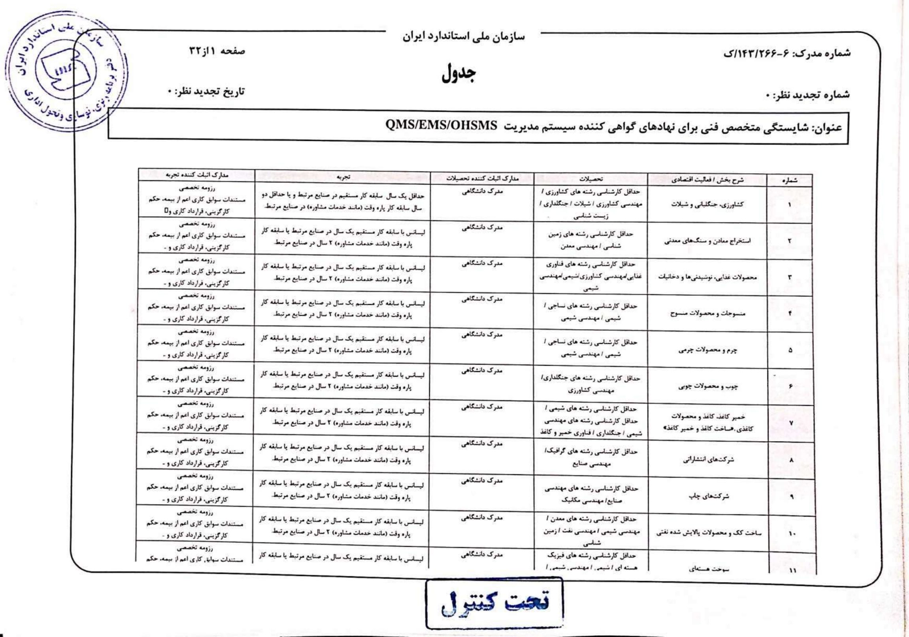


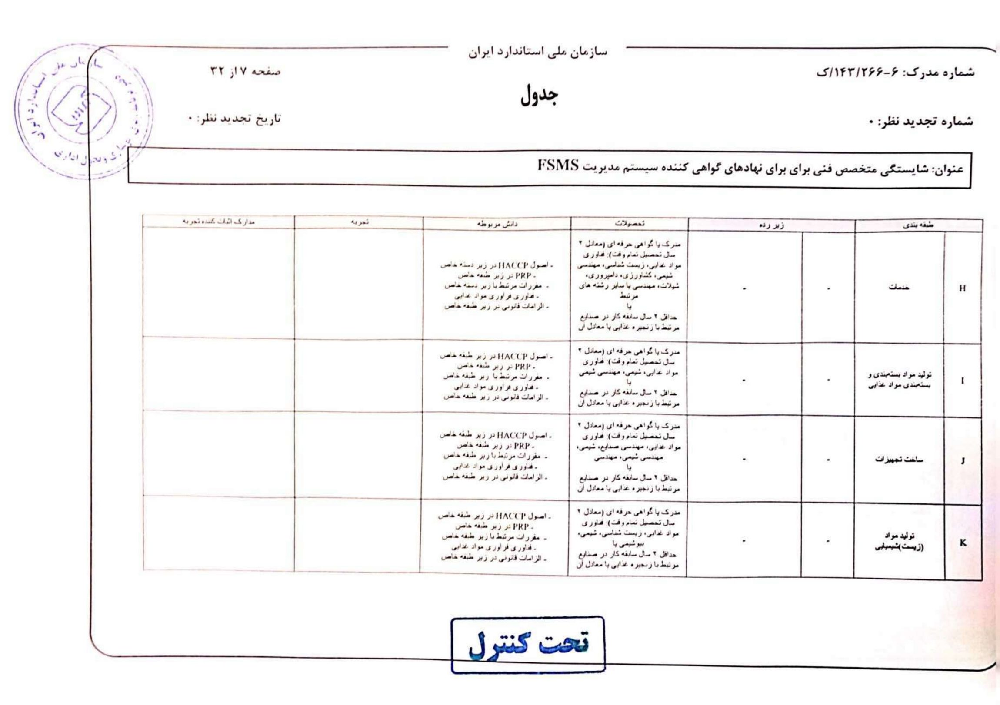
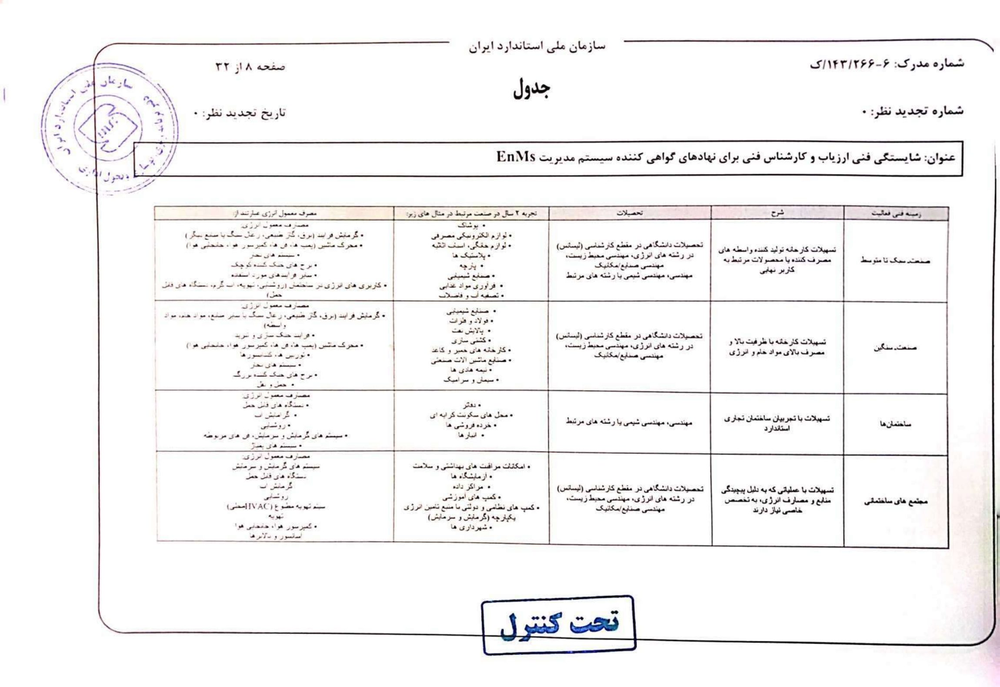
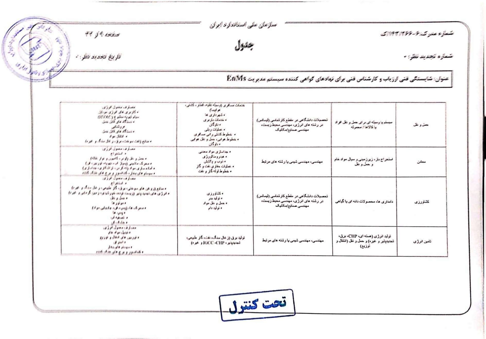


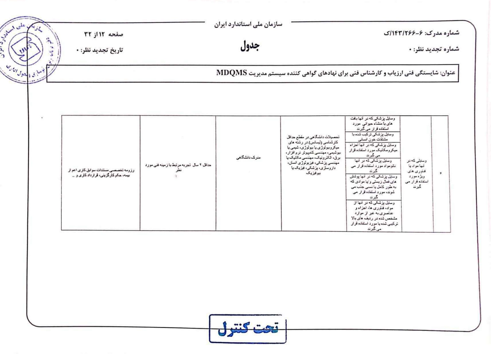
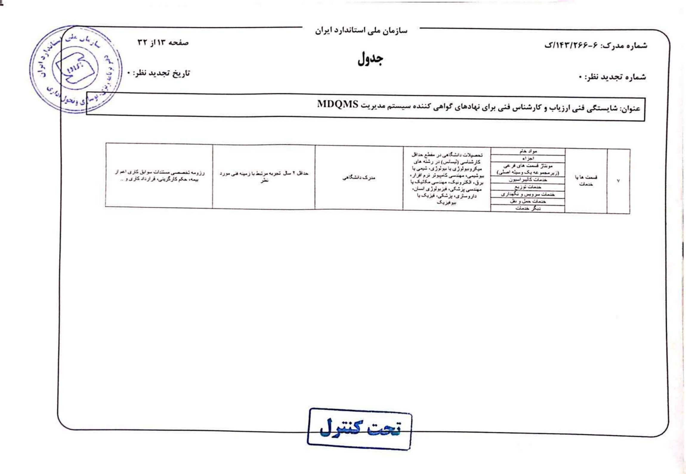
پیوست ۶: رشتههای آزمایشگاه آزمون ۱۷۰۲۵


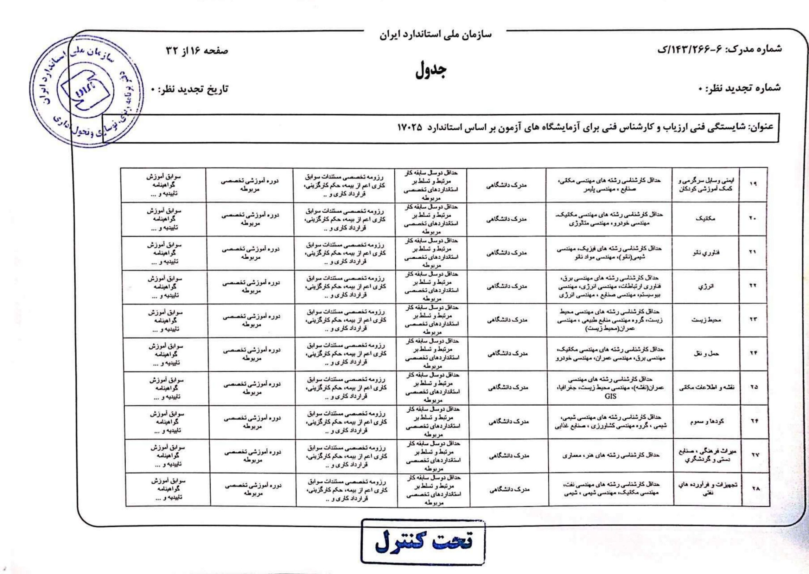
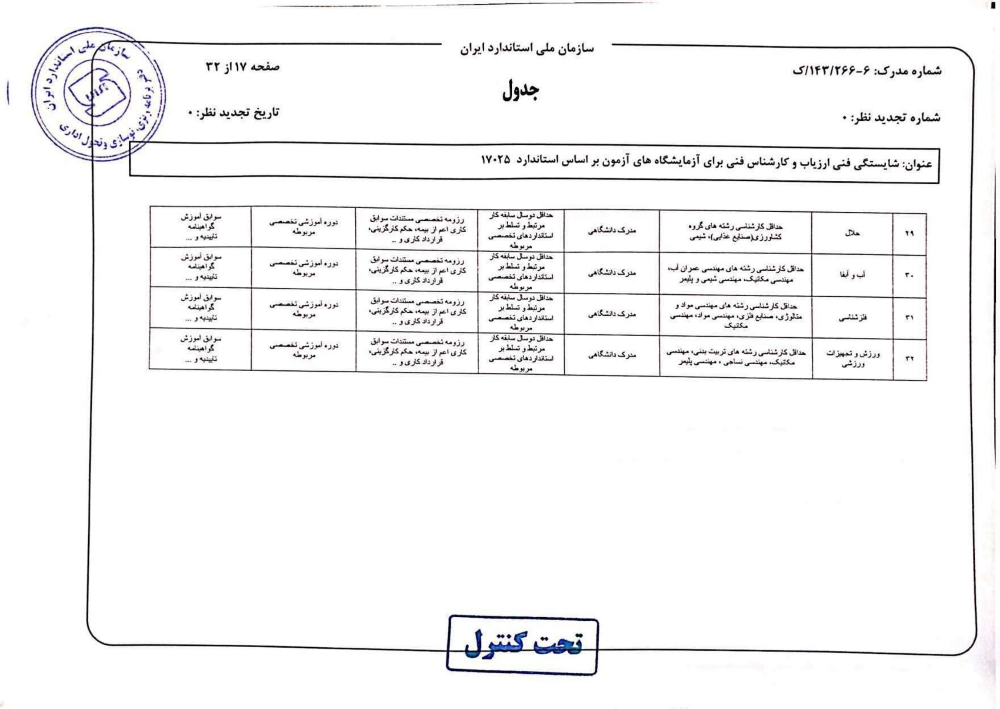
پیوست ۶: سایر نهادها، کالیبراسیون و بازرسی
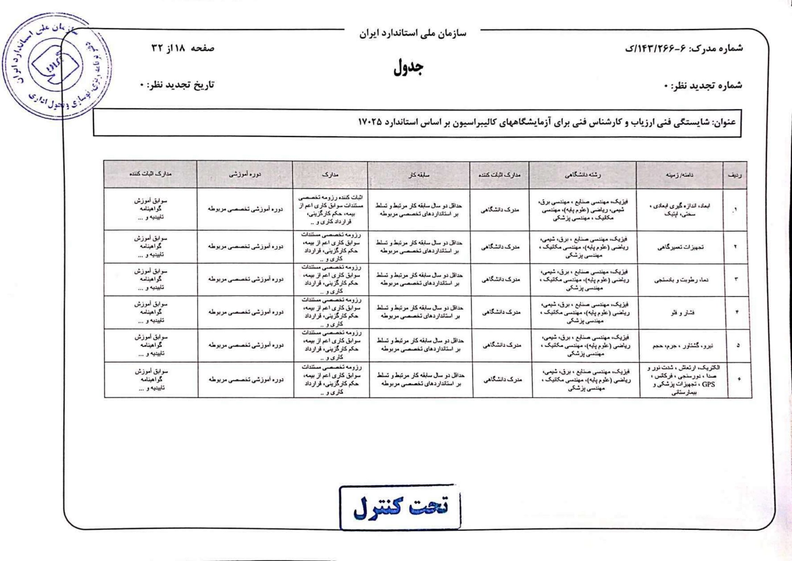


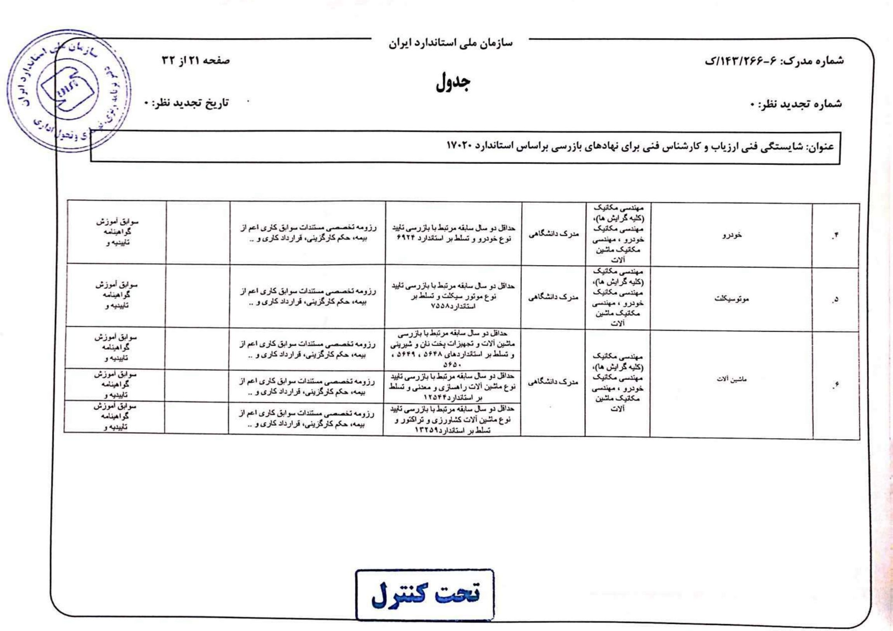


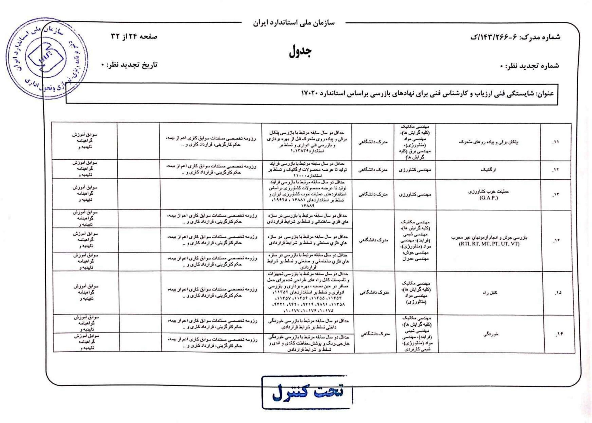

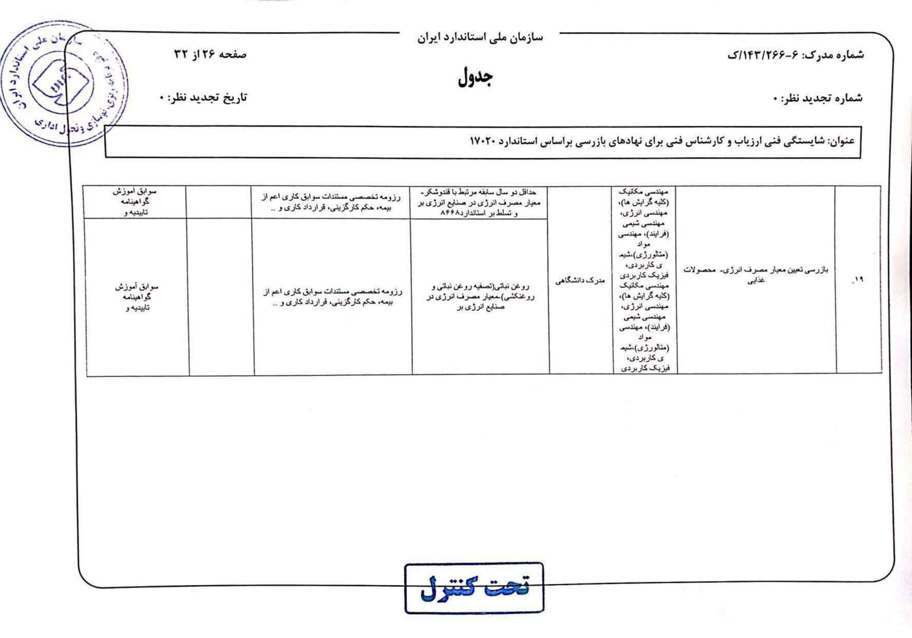


نقشهی باقی پیوستها
| پیوست | صفحات PDF | کاربرد |
|---|---|---|
| ۱ و ۲ | ۱۸ تا ۲۳ | فرم درخواست و تمدید حقیقی؛ مشخصات، مدارک و زمینه و رشته |
| ۳ و ۴ | ۲۴ تا ۲۷ | سوگندنامه و نمونه پروانه |
| ۵ | ۲۸ تا ۳۲ | شروط شایستگی و سابقه نقشها |
| ۶ | ۳۳ تا ۶۵ | سیستمهای مدیریت، صنایع، آزمون، کالیبراسیون، بازرسی و سایر نهادها |
| ۷ | ۶۶ تا ۷۵ | فرم درخواست حقیقی تأیید صلاحیت و حوزههای تخصصی |
| ۸ | ۷۶ تا ۸۵ | فرم تمدید تأیید صلاحیت و حوزههای تخصصی |
فرمها شرط تازهای مستقل از جدولهای اصلی فرض نشدهاند؛ برای نام دقیق حوزه، کد و مدارک فرم، اصل آن را ببین. ↗ بازکردن فرمها و همهی پیوستها
اولویتهای مرور بر اساس متن منابع
این اولویتبندی بر پایهی تعریفهای نزدیک، اعداد صریح، مراحل و استثناهای جزوههاست؛ سابقهی سؤالات آزمون در پوشه وجود نداشت و این فهرست پیشبینی آماری یا تضمین سؤال نیست.
اولویت بسیار بالا
- چهار محور ماده ۶؛ تفاوت ارزیابی انطباق، تأیید انطباق، گواهیکردن و تأیید صلاحیت.
- اصلاح، اقدام اصلاحی و پیشگیرانه؛ تصدیق و صحهگذاری با توجه به استاندارد سؤال.
- هفت اصل مدیریت کیفیت و کاربرد هرکدام در آزمایشگاه؛ تضمین کیفیت در برابر کنترل کیفیت.
- ماده ۲۱ و شرایط حقیقی/حقوقی؛ ۳ سال اعتبار؛ الزام آزمون اولیه در نسخه ۱۴۰۴ و تشخیص مصاحبه.
- زنجیرهی انتخاب ← تعیین ← بازنگری، تصمیم و تأیید؛ مراقبت و نتیجهی منفی ارزیابی.
- صدور در برابر ارجاع: داشتن پروانه، حق قطعی دریافت کار ایجاد نمیکند؛ دامنه، نیاز، تعارض منافع و محرمانگی.
- تمدید: ۲ ماه قبل، ۴۸ ساعت با سالانه ۱۶ ساعت، بیش از ۶ ماه تأخیر و بررسی مانند درخواست جدید.
- مواد ۱۹، ۲۰، ۲۱، ۲۲ و ۲۷: کارشناس سازمان، مدیر کنترل کیفیت، کارشناس رسمی، آزمایشگاه گمرک و اعتبار کارشناسی.
اولویت بالا
تفاوت شکایت و رسیدگی مجدد؛ تعلیق، ابطال، انقضا و اعاده؛ شخص اول/دوم/سوم و اثر برونسپاری؛ استقلال و بیطرفی؛ برنامه/طرح و ممیزی مشترک/ترکیبی؛ مواد ۱۴، ۴۰، ۴۲، ۴۴، ۴۷ و ۴۹؛ شرایط نقش آزمایشگاهی در پیوستهای ۵ و ۶ روش انتخاب.
دامهای کوتاه
- «گواهی مدیریت کیفیت» اثبات خودکار شایستگی همهی آزمونهای آزمایشگاه نیست.
- کالیبرهبودن تجهیز، بهتنهایی پایان تأیید اندازهشناختی برای کاربرد موردنظر نیست.
- نبود شکایت اثبات رضایت نیست؛ ریسک فقط اثر منفی نیست.
- ارزیابی انطباق میتواند عدم تحقق الزام را نشان دهد؛ آزمون بهتنهایی تمام فرایند گواهی نیست.
- اختیار کارشناس به محور، رشته، گرایش، مأموریت و ضابطه محدود است؛ صلاحیت یک رشته، صلاحیت همهی رشتهها نیست.
- ۱۰۰ ساعت تدریس در ۳ سال، شرط ورود زمینهی آموزشی است؛ ۴۸ ساعت آموزش در دورهی اعتبار، شرط تمدیدِ روش ۱۴۰۲ است.
جدولی برای حفظکردن بدون جابهجایی
| عدد | موضوع و قید | مرجع |
|---|---|---|
| ۳ سال | اعتبار اولیهی حقیقی و حقوقی | دستورالعمل ۱۴۰۴، ماده ۳ |
| ۲ زمینه؛ ۲ رشته؛ ۲ گرایش در هر رشته | حداکثر انتخاب حقیقی طبق سابقه | روش انتخاب، PDF ص۶ |
| ۱۰۰ ساعت در ۳ سال اخیر | تدریس مؤثر مرتبط برای زمینه آموزشی | روش انتخاب، ص۷ |
| حداقل ۳ سال | سابقه مرتبط ارزیابی انطباق/اندازهشناسی؛ و سمتهای خاص طبق مدارک | روش انتخاب، ص۷ و ۸ |
| ۳ سال مدیریت یا ۶ سال کارشناسی | سابقه تخصصی مؤثر دستگاهها، با شروط مدارک | روش انتخاب، ص۸ |
| ۲ روز کاری | اعلام استخدام در دستگاه مشمول؛ کتبی به استان | روش انتخاب، ص۸ |
| حداقل سالی ۱ بار | آزمون سراسری؛ عمومی و تخصصی همزمان | روش انتخاب، ص۱۰ |
| ۱۰ روز کاری | استعلام اصالت مدارک از زمان تکمیل | روش انتخاب، ص۱۱ |
| ۳ روز کاری | رفع نقص پس از اعلام ادارهکل | روش انتخاب، ص۱۱ |
| حداکثر ۱ ماه | طرح مدارک قبولشده پس از اعلام نتیجه و وصول مدارک کامل | روش انتخاب، ص۱۱ |
| حداکثر ۲ روز کاری | مهلت پاسخ حراست؛ نبود پاسخ طبق متن عدم تأیید | روش انتخاب، ص۱۱ و ۱۵ |
| ۲ ماه قبل | شروع درخواست تمدید نسبت به پایان اعتبار | روش انتخاب، ص۱۳ |
| حداقل ۴۸ ساعت؛ سالانه ۱۶ ساعت | آموزش مؤثر در دوره اعتبار برای تمدید | روش انتخاب، ص۱۳ |
| بیش از ۶ ماه | بدون درخواست تمدید بعد از پایان اعتبار ← ابطال | روش انتخاب، ص۱۳ |
| ۷ + ۷ روز کاری | انعکاس تأیید تمدید توسط دبیرخانه؛ سپس صدور و تحویل توسط ادارهکل | روش انتخاب، ص۱۴ |
| ۶ سال / حداقل ۳ سال | بایگانی انتخاب / ارجاع کار | انتخاب ص۱۵؛ ارجاع ص۷ |
| ۶ ماه از تصویب روش ارجاع | تکلیف ایجاد بستر نرمافزاری | روش ارجاع، ص۵ |
| ۲ نوبت؛ فاصله ۱۰ روز؛ ۲ روزنامه | اعلام اجباریشدن؛ علاوه بر روزنامه رسمی و دیگر رسانهها | قانون ماده ۱۴ |
| ۳۰ روز پس از ابلاغ | اعتراض قضایی به تصمیم کمیسیون ۴۲ | قانون ماده ۴۲ |
| کمتر از ۲؛ بیش از ۲ و کمتر از ۶؛ بیش از ۶ ماه | طبقات مدت درمان ماده ۴۴؛ حد برابر را حدس نزن | قانون ماده ۴۴ |
| ۴ سال | دوره رئیس سازمان، رئیس مرکز، متخصصان شورا و فقیه حلال طبق شروط هر ماده | مواد ۷، ۹، ۳۴، ۳۶ |
| ۱ سال؛ ۶ ماه؛ ۳ ماه | دستورالعمل ماده ۲۴؛ نقشه راه ماده ۳۰؛ آییننامه ماده ۶۰ از مبدأ مقرر هر ماده | قانون |
پاسخ را اول خودت بنویس
پاسخها نمونهی آموزشیاند؛ در امتحان، کلیدواژههای تعریف، قید، استثنا و منبع را حفظ کن. برای تمرین، روی هر سؤال توقف کن و بعد پاسخ را باز کن.
۱. ارزیابی انطباق، گواهی کردن و تأیید صلاحیت چه تفاوتی دارند؟
ارزیابی انطباق اثبات تحقق الزامات مشخصشده است و میتواند نتیجهی منفی داشته باشد. گواهی کردن نوعی تأیید انطباق شخص سوم بهجز تأیید صلاحیت است. تأیید صلاحیت دربارهی نهاد ارزیابی انطباق است و شایستگی، بیطرفی و انسجام عملکرد آن را برای فعالیت خاص بهطور رسمی اثبات میکند. کلید: فعالیت عمومی / نوع بیانیه / موضوعِ نهاد و دامنهی خاص. منبع: ۱۷۰۰۰، PDF ص۱۱ و ۲۰–۲۱.
۲. نتیجهی یک آزمون اشتباه گزارش شده است؛ اصلاح و اقدام اصلاحی را با مثال تفکیک کنید.
اصلاح، رفع عدم انطباق تشخیصدادهشده است؛ مثلاً اصلاح و بازصدور گزارش طبق رویهی مجاز. اقدام اصلاحی، حذف علت و جلوگیری از تکرار است؛ مانند بررسی علت انتقال نادرست داده و اصلاح سازوکار بازنگری. اقدام پیشگیرانه پیش از بروز عدم انطباق بالقوه علت را حذف میکند. صرف تغییر عدد، اثبات حذف علت نیست. مثال آموزشی؛ منبع تعریف: ۹۰۰۰، ص۵۵.
۳. تصدیق و صحهگذاری را در دو استاندارد این مجموعه توضیح دهید.
در ۹۰۰۰ تصدیق، اثبات تحقق الزام مشخصشده با شاهد عینی است؛ صحهگذاری تحقق الزام کاربرد خاص یا استفادهی موردنظر را اثبات میکند. در ۱۷۰۰۰ تصدیق بر درستبودن، از جمله ادعای مبتنی بر رخداد یا نتیجهی پیشین، و صحهگذاری بر تحققپذیری کاربرد موردنظر در آینده تأکید دارد. پاسخ باید با زمینهی استاندارد سؤال هماهنگ باشد. منبع: ۹۰۰۰ ص۴۸؛ ۱۷۰۰۰ ص۱۹.
۴. چرخهی ارزیابی یک محموله را از ابتدا تا مراقبت شرح دهید.
موضوع، استاندارد و الزام، نمونهی معرف، روش، اشخاص و شرایط انتخاب میشوند؛ در تعیین، آزمون یا بازرسی و اطلاعات تحقق الزام به دست میآید؛ در بازنگری کفایت و اثربخشی بررسی میشود؛ تصمیم دربارهی اثبات تحقق گرفته و در صورت اثبات بیانیه صادر میشود. برای حفظ اعتبار، مراقبت متناسب تکرار میشود؛ تکرار کامل اولیه الزام همیشگی نیست. عدم تحقق باید گزارش و در لزوم اعتبار محدود، تعلیق یا ابطال شود. منبع: ۱۷۰۰۰ پیوست الف، ص۲۸–۳۴.
۵. شرایط صدور اولیهی پروانه حقیقی در دستورالعمل ۱۴۰۴ چیست؟
حداقل کارشناسی مرتبط طبق جدول تخصصی، تجربهی مؤثر مرتبط، نبود سوءپیشینه، استقلال و نبود تعارض منافع، امانت و وثاقت. آزمون تخصصی در صدور اولیه برای همه الزامی است. پس از قبولی و احراز سایر شروط، مصاحبه به تشخیص کمیته است. با تأیید کمیته پروانهی ۳ساله صادر میشود. منبع: ماده ۳ دستورالعمل، ص۴–۶.
۶. شرایط اشخاص حقوقی در استانداردسازی با دیگر زمینهها چه تفاوتی دارد؟
در ارزیابی انطباق، اندازهشناسی و تأیید صلاحیت، گواهی معتبر مرکز ملی در گرایش تقاضا لازم است. در استانداردسازی، مجوز قانونی، سابقهی مرتبط، موضوع اساسنامهی مرتبط و نیروی متخصص شامل حداقل یک کارشناس رسمی حقیقی مرتبط لازم است. نبود سوءپیشینه و تعارض و امانت و وثاقت نیز لازماند. مدارک ادارهکل، تأیید و تصمیم کمیسیون را طی میکنند. منبع: دستورالعمل ۱۴۰۴، ص۵–۶.
۷. دارندهی پروانه ادعا میکند سازمان باید به او کار ارجاع دهد؛ پاسخ چیست؟
بهکارگیری بر اساس نیاز سازمان است. کار باید در محور و رشتهی مندرج در پروانه، با رعایت ضوابط، تعرفه، پیشنیاز آموزشی و کارورزی و احراز محرمانگی و نبود تعارض انجام شود. پروانه مجوز فعالیت در حدود مشخص است و بهتنهایی تضمین دریافت مأموریت نیست. منبع: ماده ۴ دستورالعمل و روش ارجاع ص۴–۵.
۸. مدارک و زمانبندی تمدید را طبق روش ۱۴۰۲ بنویسید.
درخواست از ۲ ماه قبل از انقضا با اصل پروانه، دو عکس جدید، گزارش فعالیت و حداقل ۴۸ ساعت آموزش مؤثر در دوره اعتبار، سالانه ۱۶ ساعت، ثبت میشود. مدارک استان و دبیرخانه و کمیسیون و استعلام حراست را طی میکند. پس از موافقت، انعکاس حداکثر ۷ روز کاری و صدور و تحویل حداکثر ۷ روز کاری انجام میشود. عدم درخواست پس از بیش از ۶ ماه از پایان اعتبار، موجب ابطال و بررسی بعدی مانند درخواست جدید است. منبع: انتخاب ص۱۳–۱۵.
۹. در مواجهه با تعارض منافع و پروندهی تخلف، واحد بهرهگیرنده چه میکند؟
پیش از ارجاع باید نبود تعارض و رعایت محرمانگی را احراز و در صورت تشخیص، تعهد کتبی بگیرد. همزمان با ارجاع پروندهی تخلف یا جرم به کمیسیون یا مرجع قضایی، ارجاع کار تا تعیین تکلیف متوقف میشود. دربارهی کار جاری یا ناتمام، واحد بهرهگیرنده برای ادامه، توقف، تکمیل یا ارجاع مجدد تصمیم میگیرد. منبع: ارجاع ص۵.
۱۰. هفت اصل کیفیت را نام ببرید و دو مورد را برای آزمایشگاه توضیح دهید.
تمرکز بر مشتری، راهبری، مشارکت کارکنان، رویکرد فرایندی، بهبود، تصمیم مبتنی بر شواهد و مدیریت روابط. نمونه: در تصمیم مبتنی بر شواهد، نتیجهی معتبر کنترل کیفیت و تحلیل داده مبنای اقدام است؛ در رویکرد فرایندی، اثر پذیرش و آمادهسازی نمونه بر آزمون و گزارش با هم مدیریت میشود. نام اصل بدون توضیحِ سازوکار، پاسخ کامل نیست. منبع: ۹۰۰۰ ص۱۳–۲۰.
۱۱. آیا گواهی کالیبراسیون برای تأیید اندازهشناختی کافی است؟
خیر. باید مناسببودن تجهیز برای کاربرد موردنظر اثبات و مدون شود. تأیید میتواند کالیبراسیون/تصدیق، تنظیم یا تعمیر لازم، کالیبراسیون مجدد، مقایسه با گستره، تفکیکپذیری و حداکثر خطای مجاز کاربرد و برچسب یا مهر را شامل شود. کالیبراسیون یکی از اجزاست. منبع: ۹۰۰۰ ص۳۵–۳۶.
۱۲. مواد ۱۹، ۲۰ و ۲۱ قانون چه تفاوتی دارند؟
۱۹: ورود، بازرسی و نمونهبرداری کارشناسان سازمان به دستور سازمان و ضابطبودن در وظیفه قانونی. ۲۰: مسئولیت کنترل کیفیت واحدها با حقیقی دارای تحصیل و تجربه مرتبط و احراز صلاحیت. ۲۱: اختیار انتخاب حقیقی، حقوقی و تشکل ذیصلاح بهعنوان کارشناس رسمی و تنظیم انتخاب، اختیار و حقالزحمه با دستورالعمل شورا. امانت و وثاقت و حدود مأموریت باید رعایت شود. منبع: قانون ص۲۹–۳۰.
۱۳. کمیسیون ماده ۴۲ چگونه رسیدگی میکند و مهلت اعتراض چیست؟
ترکیب شامل قاضی منتخب رئیس قوه قضاییه، مدیرکل استان، نماینده سازمان حمایت و نماینده اتاق مربوط است. شرایط و امکانات خاطی و تکرار را میسنجد؛ در احراز جرم به مرجع قضایی ارجاع میدهد و در غیر آن اقداماتی مانند اخطار، تعهد، جریمه، تعطیلی، جمعآوری، اصلاح، فروش یا امحا اتخاذ میکند. تصمیم تا ۳۰ روز پس از ابلاغ قابل اعتراض قضایی است، وگرنه قطعی است. منبع: قانون ص۵۰–۵۱.
۱۴. شکایت و درخواست رسیدگی مجدد و نیز تعلیق و انقضا را مقایسه کنید.
رسیدگی مجدد درخواست شخص مرتبط با موضوع برای بازبینی تصمیم نهاد دربارهی آن موضوع است؛ شکایت نارضایتیِ غیر از آن از فعالیت نهاد با انتظار پاسخ است و هر فرد یا سازمان میتواند ابراز کند. تعلیق، محدودیت موقت بیانیه توسط صادرکننده است؛ انقضا پایان اعتبار در دورهی مشخص. ابطال لغو بیانیه و اعاده بازگرداندن آن است. منبع: ۱۷۰۰۰ ص۲۱–۲۳.
۱۵. فرق برنامه، طرح، ممیزی ترکیبی و مشترک چیست؟
برنامه یک یا چند ممیزی در دوره و مقصود معین است؛ طرح شرح فعالیت و ترتیبات یک ممیزی. ترکیبی، دو یا چند سیستم مدیریت یک ممیزیشونده را با هم میسنجد؛ مشترک، توسط دو یا چند سازمان ممیزیکننده دربارهی یک ممیزیشونده است. منبع: ۹۰۰۰ ص۵۸.
۱۶. تفاوت مجازات جعل برگه آزمون با اظهاریه خلاف واقع در متن قانون چیست؟
ماده ۴۰ بند ۷: جعل و تقلب برگه آزمایش، تشخیص، مشخصات و پروانه، حبس تعزیری درجه ۶ یا جریمه درجه ۳ یا هر دو. بند ۹: اظهاریه انطباق خلاف واقع، حبس درجه ۵ و جزای نقدی درجه ۲؛ «و» در بند ۹ باید حفظ شود. منبع: قانون ص۴۹–۵۰.
۱۷. نقش آزمایشگاهها در گمرک و اعتبار گزارش آنها را طبق قانون بیان کنید.
ماده ۲۲ استفاده از آزمایشگاههای خصوصی، تعاونی و دانشگاهی مورد تأیید را در همه گمرکهای ورودی/خروجی لازم میداند و در نبود آنها ایجاد آزمایشگاه مناسب را پیشبینی میکند. تبصره ماده ۳۱ دریافت خدمات از آزمایشگاه سازمان یا مورد تأیید را مقرر میکند. ماده ۲۷ گواهینامههای آزمایشگاه آزمون و کالیبراسیون تأییدصلاحیتشده درباره تطبیق ویژگی با استاندارد را کارشناسی رسمی قابل قبول مراجع میداند؛ تعمیم به همه آزمونهای خارج از دامنه مجاز نیست. منبع: قانون ص۳۰،۳۳،۳۵.
۱۸. کارشناس رسمی پس از استخدام در دستگاه مشمول چه وظیفهای دارد؟
در روش ۱۴۰۲ باید حداکثر ظرف ۲ روز کاری وضعیت اشتغال را کتبی به ادارهکل استان اعلام کند؛ ادارهکل بلافاصله به دبیرخانه خبر میدهد؛ دبیرخانه تعلیق میکند و ابطال را در نخستین جلسه کمیسیون مطرح میکند. شاغل دستگاه موضوع ماده ۵ در زمان اشتغال مجاز به دریافت پروانه نیست. منبع: انتخاب ص۶ و ۸.
سؤالهای کوتاه برای بازیابی از حافظه
۱. چهار محور ماده ۶؟
استانداردسازی، اندازهشناسی، تأیید صلاحیت، ارزیابی انطباق.
۲. تأیید انطباق شخص اول چه نام دارد؟
اظهار کردن؛ در ۱۷۰۰۰ برای شخص دوم اصطلاح ویژهی متناظر وجود ندارد.
۳. آیا نهاد تأیید صلاحیت در تعریف ۱۷۰۰۰ همان نهاد ارزیابی انطباق است؟
خیر؛ تعریف نهاد ارزیابی انطباق فعالیت تأیید صلاحیت را استثنا میکند.
۴. ریسک فقط تهدید است؟
خیر؛ اثر عدمقطعیت میتواند انحراف مثبت یا منفی از انتظار باشد.
۵. کیفیت و درجه یکیاند؟
خیر؛ کیفیت میزان تحقق الزام با ویژگی ذاتی است؛ درجه ردهی الزامات متفاوت برای کاربرد یکسان.
۶. حذف خطا با حذف علت خطا چه فرق دارد؟
اولی اصلاح؛ دومی همراه با جلوگیری از تکرار، اقدام اصلاحی.
۷. نبود شکایت چه چیزی را ثابت نمیکند؟
رضایت بالای مشتری را.
۸. سوابق عموماً به چه کنترل مدرکی نیاز ندارند؟
کنترل تجدیدنظر؛ این به معنی بینیازی از نگهداری و بازیابی نیست.
۹. اعتبار اولیهی پروانه؟
۳ سال؛ طبق روش انتخاب از تاریخ برگزاری کمیسیون تأیید میشود.
۱۰. حدنصاب عددی ثابت آزمون در روش انتخاب آمده است؟
خیر؛ تعیین آن با کمیسیون است.
۱۱. ۱۰۰ ساعت و ۴۸ ساعت مربوط به چیست؟
۱۰۰ ساعت تدریس در ۳ سال اخیر برای ورود زمینه آموزش؛ ۴۸ ساعت آموزش مؤثر در دوره اعتبار برای تمدید، سالانه ۱۶ ساعت.
۱۲. درخواست تمدید از چه زمانی؟
۲ ماه قبل از پایان اعتبار.
۱۳. بدون درخواست تمدید، بیش از ۶ ماه از انقضا بگذرد؟
طبق روش انتخاب ابطال؛ درخواست بعدی مانند درخواست جدید بررسی میشود.
۱۴. بایگانی انتخاب و ارجاع؟
انتخاب ۶ سال؛ ارجاع حداقل ۳ سال.
۱۵. آیا برونسپاری ممیزی داخلی آن را شخص سوم میکند؟
خیر؛ اگر به نمایندگی و تحت کنترل سازمان باشد شخص اول باقی میماند.
۱۶. اعتبار پروانه، حق قطعی مأموریت ایجاد میکند؟
خیر؛ نیاز سازمان و دامنه و شرایط ارجاع لازماند.
۱۷. در ۱۴۰۴ آزمون اولیه اختیاری است؟
خیر؛ آزمون تخصصی برای همه متقاضیان اولیه الزامی؛ مصاحبه پس از قبولی به تشخیص کمیته.
۱۸. مرجع تصویب اجباریبودن استاندارد؟
شورای عالی استاندارد؛ سازمان با تصویب شورا و تعیین مهلت اعلام میکند.
۱۹. اطلاع اجباریشدن در چند نوبت؟
۲ نوبت به فاصله ۱۰ روز؛ روزنامه رسمی، ۲ روزنامه کثیرالانتشار و روشهای مقرر دیگر.
۲۰. مهلت اعتراض ماده ۴۲؟
۳۰ روز پس از ابلاغ تصمیم، در مرجع قضایی ذیصلاح.
۲۱. داشتن علامت مسئولیت مستمر تولیدکننده را از بین میبرد؟
خیر؛ ماده ۴۷ صریحاً حفظ و ارتقای استاندارد را همچنان بر عهده او میداند.
۲۲. مرجع رسمی اعطای نشان حلال؟
سازمان ملی استاندارد ایران، طبق متن این قانون.
۲۳. اثربخشی با کارایی؟
تحقق فعالیت و نتیجهی طرحریزیشده / رابطه نتیجه با منابع مصرفشده.
۲۴. شاهد، یافته و نتیجهگیری ممیزی؟
اطلاعات مرتبط و قابل تصدیق / ارزیابی شاهد طبق معیار / ماحصل بررسی هدف و همه یافتهها.
۲۵. کارشناس فنی یا ناظر در تیم، ممیز است؟
در آن نقش خیر؛ کارشناس فنی تخصص ارائه میکند و ناظر مشاهده میکند.
۲۶. تأیید صلاحیت آزمایشگاه چه سه مؤلفهای را اثبات میکند؟
شایستگی، بیطرفی و انسجام عملکرد برای فعالیت خاص.
۲۷. مرز درمان دقیقاً ۲ یا ۶ ماه را از خلاصه چطور تعیین کنیم؟
نباید حدس زد؛ متن موجود ماده ۴۴ فقط کمتر از ۲، بیش از ۲ و کمتر از ۶، و بیش از ۶ را بیان میکند.
۲۸. پیوست ۵ روش انتخاب چه فرقی با پیوست ۶ دارد؟
۵ شروط نقش و سابقه و دانش؛ ۶ جداول شایستگی رشته، مدرک، مهارت و سابقه. باید هر دو مرتبط خوانده شوند.
یک دور نهایی؛ بدون مطلب تازه
۱. چهار خانوادهی مفهوم
کیفیت ← ویژگی ذاتی و الزام؛ مدیریت کیفیت ← طرحریزی، تضمین، کنترل، بهبود. ارزیابی انطباق ← انتخاب و تعیین و بازنگری/تصمیم/بیانیه. کارشناسی رسمی ← احراز، آزمون، کمیته، پروانه، ارجاع محدود، پایش و تمدید. قانون ← حاکمیت سازمان، شورا، نظارت و رسیدگی.
۲. تفاوتهای واجب
اصلاح = رفع عدم انطباق؛ اصلاحی = حذف علت و جلوگیری از تکرار؛ پیشگیرانه = حذف علت بالقوه. تصدیق = تحقق الزام مشخص؛ صحهگذاری = کاربرد موردنظر (و در ۱۷۰۰۰ تحققپذیری آینده). گواهی = شخص سوم؛ تأیید صلاحیت = شایستگی نهاد. تضمین = اطمینان؛ کنترل = برآوردن. مشترک = چند سازمان ممیزیکننده؛ ترکیبی = چند سیستم مدیریت.
۳. اعداد را با موضوع بخوان
۳ سال اعتبار؛ ۲ ماه پیش از پایان برای تمدید؛ ۴۸ ساعت با سالانه ۱۶؛ بیش از ۶ ماه بیدرخواست، ابطال؛ ۱۰ روز کاری استعلام، ۳ روز کاری رفع نقص، ۲ روز کاری پاسخ حراست در روش ۱۴۰۲؛ ۷ و ۷ روز کاری تمدید؛ انتخاب ۶ سال بایگانی، ارجاع حداقل ۳ سال؛ ۳۰ روز اعتراض ماده ۴۲؛ اعلام اجباری در ۲ نوبت با فاصله ۱۰ روز.
۴. استثناها را بلند بگو
آزمون اولیه در ۱۴۰۴ برای همه الزامی است؛ مصاحبه حسب تشخیص کمیته. نیاز سازمان شرط ارجاع است. تعارض منافع و محرمانگی پیش از مأموریت بررسی میشوند. پروانه خارج از دامنه اجازه نمیدهد. کالیبراسیون بهتنهایی تأیید مناسببودن برای کاربرد نیست. گواهی یا علامت مسئولیت مستمر را سلب نمیکند. شکایت با اعتراض به تصمیم یکی نیست. استثنای خدمات بهداشتی ماده ۳ را با تجهیزات پزشکی ماده ۷ اشتباه نکن.
۵. الگوی پاسخ تشریحی
تعریف دقیق ← تفاوت با اصطلاح نزدیک ← مراحل یا شرط و استثنا ← یک مثال کوتاه ← نام ماده/استاندارد و نسخه در صورت ارتباط. اگر عدد یا حدی در منبع نیامده، عدد نساز؛ مثلاً حدنصاب آزمون و مبلغ تعرفه در این فایلها عدد ثابت ندارند.
پیش از بستن بسته: یک بار جدول ماده ۴۰، شرایط رشتهی خود در پیوست و اختلاف نسخهی ۱۴۰۲/۱۴۰۴ را مرور کن. اگر وقت کم است، اول سؤالهای ۱ تا ۹ تشریحی و جدول اعداد را از حافظه پاسخ بده.
اصل منابع برای تطبیق
فایلها بدون تغییر همراه بستهاند. ارجاع صفحه در بعضی نمایشگرهای موبایل ممکن است به ابتدای فایل باز شود؛ شماره را دستی وارد کن. خلاصهها مبنای مطالعهی این نسخهها هستند و همهی متن منبع را عیناً بازتولید نمیکنند.